Analyzer User's Guide
Simics Analyzer provides features for completely non-intrusive analysis and debugging of software applications within Simics. It makes it possible to see what software processes are running, and to inspect, analyze and debug them individually. It includes tools for code coverage analysis and other profiling. This document describes how these features work, and shows how to use them.
Many of the features described in this documentation build on other features in Simics, and it is recommended that you read the Simics User's Guide to familiarize yourself with the Simics debugging tools.
Simics Analyzer includes a source code debugger for C and C++, that you can use from the Simics command line. You can read more about it in chapter 3.
The OS Awareness (OSA) feature provides commands (section 2.3) and interfaces (section 2.5) to assist in debugging or analyzing target software. Other Simics features, such as the Simics debugger, also make use of the OSA feature.
To be able to debug, analyze, or otherwise track tasks, processes, etc on the target software Simics employs specialized tracker modules. These trackers examine the state of the target system to determine when and where each task is running. This is usually achieved by monitoring changes to memory, registers or processor state. No modification or instrumentation of the target software is required.
This documentation covers the OS Awareness framework and trackers that are provided in the Simics base package. For other trackers, see their respective documentation. The Simics Model Builder product makes it possible to create custom trackers.
To be able to use the features described in this chapter, the configuration script for the target system needs to support the OS awareness functionality. For this to work the target script has to be set up with a software object and a tracker composition object for the specific operating system. Most provided target scripts will set up the software object directly under the main system top object, such as board.software. See section 2.9 for details about adding OS Awareness to scripts.
To see which tracker is used, you can use the info command on the software slot:
simics> board.software.info
Information about board.software [class os_awareness]
=====================================================
Software:
Tracker : board.software.tracker
Tracker class : linux_tracker_comp
CPUs : board.mb.cpu0.core[0][0]
In the example above, the software tracker is configured with the tracker composition of type linux_tracker_comp at the slot board.software.tracker. If there is no tracker object configured then none is shown both as class and object.
The software object provides commands for inspecting and monitoring the target software, an overview of available commands can be found in section 2.3.
Tracking software does not come for free. For this reason, the OSA framework is disabled by default and has to be enabled to make it track anything or get any information out of it.
There are different ways to enable and disable the OSA framework. First, it can be done via the command line using the enable-tracker command. To disable the tracker again use the disable-tracker command.
simics> board.software.enable-tracker
simics> board.software.disable-tracker
Secondly, it can be enabled (disabled) using the request (release) function in the osa_control_v2 interface. The request function generates a new OSA framework handle and the release function releases the corresponding handle. The OSA framework is enabled when there exist at least one active OSA framework handle and is disabled when there are no active OSA framework handles. The enable-tracker command uses the osa_control_v2 interface internally to enable and disable the OSA framework. Hence, this way to enable and disable the OSA framework can be used from within scripts without affecting OSA framework operation started from other scripts.
simics> @admin = conf.board.software.iface.osa_component.get_admin()
simics> @(ok, riq_or_msg) = admin.iface.osa_control_v2.request("My requester")
simics> @admin.iface.osa_control_v2.release(riq_or_msg)
Each of the above methods for controlling the OSA framework are separate from each other. That means that the framework can only be disabled using the matching disable function and that the framework will stay active until there are no more users with an active request.
Some trackers are able to determine some information about the running software just by enabling it on an already running system, but in other cases there is additional—and sometimes important information— that can only be collected by having the tracker enabled while the software starts. For instance, the Linux software tracker can determine the name and process id of already running processes, but to determine the path to the running binary the tracker needs to be enabled when the process starts.
A tracker—when activated—monitors the machine state and the associated mapper represents it as a tree of nodes, in a hierarchical way. Other objects and scripts can query this tree, and register callbacks that trigger when it changes.
The node tree usually represents the state of the operating system. A node can map against a software entity such as a thread. Other nodes group child nodes based on a property they share, such as being part of the same process or running under the same access level. Another possibility is to group by guest OS for a Hypervisor, as the framework supports stacked node trees.
Each tree will consist of a single root node at the base. This root node usually provides the overall system details, such as the name of the operating system.
The node tree changes over time, and nodes will be created and destroyed as processes and threads are born and die.
The OSA framework provides a couple of interfaces in order to operate on the node tree. For getting the state of the node tree there is the osa_node_tree_query interface. For monitoring changes to the node tree the osa_node_tree_notification interface can be used. See the API - Reference Manual for details about these interfaces and section 2.5 for scripting examples.
In the interfaces and commands used to interact with the node tree, every node is identified by a node ID, which is an integer that is unique. The IDs are never reused by the framework.
Each node has a set of named properties that contain information about what the node represents. Which properties exist depends on the type of node, but the properties listed below are the standard properties, which all nodes have (except where noted):
- name
The name of this node. Unlike the ID, it does not need to be unique.
A list of properties that will uniquely identify nodes at the same level. All nodes that have the same parent node must have the same value for extra_id. If the list is empty, the property name should be used to identify the node. The extra_id property is useful for finding a unique node without having to know its node ID.
Each tracker defines its own set of node properties. See documentation for each tracker for further details.
The node-tree command can be used to print the current node tree. See figure 1 for an illustration of a node tree.
A node can be active for a certain processor in which case all its ancestors will also be active. The exact meaning of this depends on the node type, but for a thread node this means that the thread is executing on the active processor. To see which processors a certain node is active on the get_current_processors function in the osa_node_tree_query interface can be used. To get a list of all active nodes the get_current_nodes function in the same interface can be used.
The following rules apply for active nodes:
- If a node is active on a processor, its parent is also active on that processor. Therefore all its ancestors all the way to the root node will also be active on that processor. This is because a child node always represents a subset of its parent.
- If two nodes are active for the same processor, then one must be a descendant of the other. This is a consequence of processors being able to do just one thing at a time. For example, it is not possible for a processor to run more than one thread at a time.
This section gives an overview of all commands provided by the software object. Using the help command for a specific command will give more detailed help for that command.
-
enable-tracker
Enables the OS Awareness framework and associated trackers. This is necessary for most other commands to work.
simics> board.software.enable-tracker
OSA control enabled.
-
disable-tracker
Disables the OS Awareness framework and enabled trackers. This will destroy all node trees.
simics> board.software.disable-tracker
OSA control disabled.
These commands will require that the tracker is enabled in order to work.
-
find
Search for a node in the node tree. The output of the command is a list of node path patterns (see 2.4) matching the search.
simics> board.software.find node="tid=1"
/Linux/Userspace/pid=1/tid=1
-
list
Prints a list of all processes in the system.
simics> board.software.list
Process Binary PID TID
systemd 1 1
...
python3 247 247
simics-agent 248 248
systemd 253 253
(sd-pam) 254 254
bash 260 260
-
node-info
Prints the name and value of all properties of the given node.
simics> board.software.node-info "tid=1"
Name : systemd
Path : /Linux/Userspace/pid=1/tid=1
ID : 648
Parent : 647
Children : []
extra_id : tid
memory_space : 647
multiprocessor : False
pid : 1
tid : 1
-
node-tree
Lists the node trees for an active software trackers.
simics> board.software.node-tree
-
bp-break -active
Break the simulation when a specific node becomes active.
simics> board.software.bp-break -active node-pattern = "tid=1"
Added breakpoint 1
-
bp-break -inactive
Break the simulation when a specific node gets deactivated.
simics> board.software.bp-break -inactive node-pattern = "tid=1"
Added breakpoint 2
-
bp.delete
Remove breakpoints that were created by bp-break.
simics> bp.delete -all
-
active-node
List the node that is active on a certain processor.
simics> board.software.active-node
board.mb.cpu0.core[0][0] is active on /Linux/Userspace/pid=1/tid=1
-
bp-wait-for -active
Similar to bp-break -active, but to be used in a script-branch.
-
bp-wait-for -inactive
Similar to bp-break -inactive, but to be used in a script-branch.
These commands do not require the tracker to be enabled.
- load-parameters
Load configuration parameters for a software tracker from a file.
- save-parameters
Save the current configuration parameters to a file.
- supports-parameters
Tells whether or not a parameters file is supported by the current modules.
A node in the node tree may be identified with its node ID. This is often not good enough, since it is hard to know the given node ID in advance; this makes scripting hard to accomplish in a satisfying way. Using node path patterns makes it possible to find nodes based on their properties instead of their node ID. A node path pattern is a matching rule that selects nodes based on one or more property values, and optionally the property values of their ancestors.
This section will assume that the node tree looks like the one in figure 1.
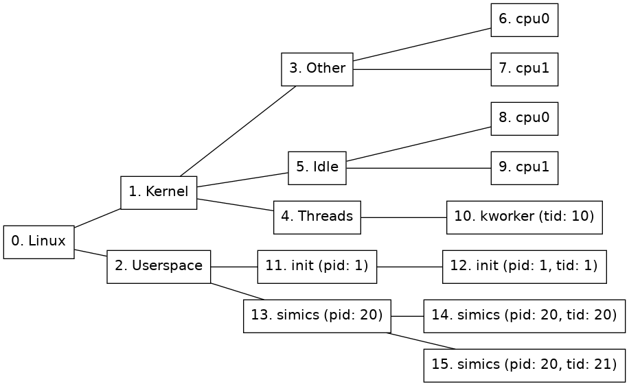
Figure 1. Example node tree
The simplest node path pattern is a single integer. This is treated as a node ID. Thus, "2" can be used to find the Userspace node:
simics> board.software.find 2
The name property will be used for matching if the given node specification only contains letters, digits, and underscore, and does not start with a digit. This gives an alternative way of locating the Userspace node in 1:
simics> board.software.find Userspace
However, if the name contain any non-alphanumeric characters, such as space or punctuation, the name needs to be enclosed in single quotes, and the name property needs to be named explicitly:
simics> board.software.find "name='Linux'"
A node path pattern can specify properties other than just the name of a node. For example, this one will find all nodes that belong to the simics process (the process node and all thread nodes) by specifying the matching pid:
simics> board.software.find "pid=20"
If a match is to be made based on multiple properties, they should be comma-separated. Given the node tree in figure 1, the following pattern would match just one node, the thread node with tid=20:
simics> board.software.find "pid=20,tid=20"
A slash (/) is used to separate rules for nodes at adjacent levels in the tree. For example, this pattern matches any node named init that lies directly under a node named Userspace:
simics> board.software.find "Userspace/init"
A slash at the beginning of the pattern anchors it to the root of the tree, so that the part after the first slash must match the root node, the part after the second slash must match any of its children, etc.
Node path patterns can contain three kinds of wildcards:
- One asterisk (
*) will match any single node. For example, /*/*/simics will match any node named simics that is a grandchild of the root node.
- Two asterisks (
**) will match a path of zero or more nodes in the tree. For example, /name=Linux/**/pid=20 matches nodes 13, 14, and 15 in the example tree.
- An asterisk in the expected value of a property matches zero or more characters. For example,
*s* will match the ls, sh, and Userspace nodes; and pid=* will match all nodes with a pid property.
Quoted wildcards will be treated literally. That means, name="'ho*er'" will only match a node named "ho*er", while name="'ho'*'er'" will match any nodes named "hover", "hoover", "hotter", etc.
This is a short summary of the available operators when creating a node path pattern.
- Integer value: this is treated as a node id
- String: if the string contains only alphanumeric characters or the _ sign and does not begin with a digit,
str will be the same as name='str'.
- Slash (
/): separates rules for nodes at different levels. At the beginning of a pattern, it means that the root has to match the following rule.
- Asterisk (
*): matches exactly one node, ignoring all node properties on that level.
- Double asterisk (
**): Matches a path of zero or more nodes in the node tree.
- Equals sign (
=): Specifies the required value of a node property.
- Comma (
,): Separator when a rule restricts more than one node property.
Node path patterns have some known limitations:
- Asterisk (
*) is the only wildcard available for property matching. More advanced wildcards, such as name=cat?? or pid=5[0-1], are not supported.
- A rule may not end with
/**/ or /**.
- It is not possible to start a pattern with
**/; use /**/ instead. (However, note that all patterns that do not already start with a slash are implicitly prefixed with /**/.)
- Just
** is not a valid pattern. Use * in order to match all nodes.
The OS Awareness framework supports scripting against the node tree. The osa_node_tree_query interface implemented by the os_awareness object can be used for retrieving the current state of the node tree. The osa_node_tree_notification interface, also implemented by the os_awareness object, can be used to register callbacks for notifications about changes to the node tree.
The administrator object can be retrieved by calling the get_admin function in the osa_component interface, implemented by the OSA object. This interface also provides the get_root_node function. This gives a known node ID which can be used to access the root node and its descendant nodes.
Details about the interfaces used for scripting can be found in the API - Reference Manual.
The following Python example script uses the OS Awareness framework and the Linux tracker to track a process and count all hardware exceptions that happen while that process is active. The basic idea is to activate the Core_Exception hap only when the given program is activate. It assumes that the target system is named board.
import simics
import conf
class exception_counter:
"This class counts hardware exceptions for a specific process."
def __init__(self, software_comp, process_name):
# Get the osa_admin object from the component, this will be used to
# access the node tree interfaces.
self.osa_admin = software_comp.iface.osa_component.get_admin()
self.notifiers = set()
self.exc_haps = {}
self.exceptions = {} # The result
# Most OSA interface functions require a node ID. Retrieve the root_id
# from the component. Using the root ID in combination with the
# recursive flag makes it possible to get notifications for the entire
# node tree.
root_node = software_comp.iface.osa_component.get_root_node()
if not root_node.valid:
print ("No root node present")
return
self.root_id = root_node.id
# The node names will be truncated to 15 characters, since
# they use the Linux task 'comm' field. So we only match the
# first 15 characters of the requested process name.
process_name = process_name[:15]
# Get interface used to register callback functions for node tree
# updates.
self.notification_ifc = self.osa_admin.iface.osa_node_tree_notification
# Get interface used to query the current state in the node tree.
self.query_ifc = self.osa_admin.iface.osa_node_tree_query
# Install a callback on node creation.
cid = self.notification_ifc.notify_create(self.root_id, True,
self.create_cb, process_name)
self.notifiers.add(cid)
# Install a callback on changes to the 'name' property in any node, in
# case the program switches name after the node was created.
self.notifiers.add(
self.notification_ifc.notify_property_change(
self.root_id, "name", True, self.name_cb,
process_name))
print(("Will count exceptions for the next process called %s"
% process_name))
def is_process(self, node_id):
# This will only work for the Linux tracker. It uses the fact that a
# process node contains the process id, but not the thread id.
props = self.query_ifc.get_node(node_id)
return 'pid' in props and not 'tid' in props
def create_cb(self, process_name, osa_admin, curcpu, node_id):
# There can be other nodes than the process node with a
# matching name, for example thread nodes. Verify both name
# and that it is a process.
if (self.query_ifc.get_node(node_id)['name'] == process_name
and self.is_process(node_id)):
self.process_found(node_id)
def name_cb(self, process_name, osa_admin, curcpu, node_id,
key, old_val, new_val):
# There can be other nodes than the process node with a
# matching name, for example thread nodes. Verify both name
# and that it is a process.
if new_val == process_name and self.is_process(node_id):
self.process_found(node_id)
def process_found(self, node_id):
# Remove the callbacks for node creation and name changes.
while self.notifiers:
self.notification_ifc.cancel_notify(self.notifiers.pop())
# Install callbacks when processors enter and leave this
# process node.
self.notifiers.add(
self.notification_ifc.notify_cpu_move_to(node_id, self.move_to_cb,
None))
self.notifiers.add(
self.notification_ifc.notify_cpu_move_from(node_id,
self.move_from_cb, None))
# Install a callback when the process finishes.
self.notifiers.add(
self.notification_ifc.notify_destroy(node_id, False,
self.destroy_cb, None))
# For each CPU already executing in this node, make sure
# to enable counting.
for cpu in self.query_ifc.get_current_processors(node_id):
self.enable_counting(cpu)
def enable_counting(self, cpu):
# Install a hap callback for the exception hap.
self.exc_haps[cpu] = simics.SIM_hap_add_callback_obj(
"Core_Exception", cpu, 0, self.exception_cb, None)
def disable_counting(self, cpu):
simics.SIM_hap_delete_callback_id("Core_Exception", self.exc_haps[cpu])
def move_to_cb(self, data, osa_admin, cpu, node_path):
self.enable_counting(cpu)
def move_from_cb(self, data, osa_admin, cpu, node_path):
self.disable_counting(cpu)
def destroy_cb(self, data, osa_admin, cpu, node_id):
print("The process finished")
for exc in sorted(self.exceptions.keys()):
print("%5d %-30s: %8d" % (exc, cpu.iface.exception.get_name(exc),
self.exceptions[exc]))
while self.notifiers:
self.notification_ifc.cancel_notify(self.notifiers.pop())
def exception_cb(self, data, cpu, exception):
if exception in self.exceptions:
self.exceptions[exception] += 1
else:
self.exceptions[exception] = 1
counter = exception_counter(conf.board.software, "ls")
Remember that this will only work if the tracker is enabled. It can be enabled with the enable-tracker command.
The OS Awareness framework provides two different types of callbacks. The first type is notifications about changes to the node tree, as explained in section 2.5. These changes are persistent until they are updated by the tracker or the node is destroyed.
The second type of notifications are called events. These are used for notifying about changes that are not persistent and hence not part of the node tree. It is up to each tracker to define the list of supported events. For example, the Linux tracker supports system call notification via the event system, see section 2.13.4 for more details.
It is possible to register an event notification callback by calling the notify_event function in the osa_node_tree_notification interface. See the API – Reference Manual for details.
Here follows a simple example of the event notification system. It registers a callback function for all events on all nodes generated by the tracker. When this callback is triggered the simulation will be stopped. This Python example assumes that the system is named board.
import simics
import conf
def event_cb(cb_data, admin, cpu, node_id, event_name, event_data):
simics.SIM_break_simulation(
"Got event '%s' on the %s cpu with event data '%s'"
% (event_name, cpu.name, event_data))
def break_on_event(software_comp):
root_node = software_comp.iface.osa_component.get_root_node()
if not root_node.valid:
print ("No root node present")
return
root_id = root_node.id
admin = software_comp.iface.osa_component.get_admin()
notification_ifc = admin.iface.osa_node_tree_notification
notification_ifc.notify_event(root_id, None, True, event_cb, None)
break_on_event(conf.board.software)
Remember that this will only work if the tracker is enabled. It can be enabled with the enable-tracker command.
Most trackers will need parameters in order to be able to track software. The parameter file contains information about which tracker should be used, and additional information required by the tracker in order to track the target software. This can be anything from offsets into structs to the name of the system. Often the parameter files will be provided with the target system and they may be loaded in the target scripts. The load-parameters command is used to load parameters.
When parameters are loaded the os-awareness object will automatically create a tracker composition object based on the parameters if one does not already exist.
For many systems the parameters can only be detected when the operating system is booted on the target. For example, the Linux tracker object provides a detect-parameters command to be able to retrieve parameters for the current system. See section 2.13.6 for more information about configuring the Linux tracker.
In order to use the OS Awareness framework, a software object must be created. This object can be created by the new-os-awareness command. The object should be created under the top object for each machine and preferably be named software. Note that many scripts will set up a pre-configured software object.
The software object handles user interaction by providing a number of commands, see section 2.3 for further details. It also contains interfaces for scripting, see section 2.5 for further details.
A new tracker can be added by using the load-parameters command if there is a parameters file available. If there are no parameters available the insert-tracker command can be used followed by the detect-parameters command as described in section 2.7. The software object should now contain a tracker composition. Note that many scripts will set up a pre-configured tracker.
Most tracker composition objects will contain two sub-objects, one named tracker_obj which takes care of tracking the currently running software. The other object will be the mapper_obj object which takes care of mapping the information given by the tracker into a node tree (see section 2.2). One tracker could potentially have several different mappers to represent the trackers information in different node trees.
Every system configuration script that creates a system on which software can run, should add an os_awareness object to the software slot of each top-level object. For further details on how to configure the OSA framework see section 2.8. This is done by running the new-os-awareness command and naming the new object by appending .software to the system top object name. This is how it's done in the standard configuration files (usually called something-system.include).
simics> new-os-awareness name = $system.software
Created OS awareness framework 'test_board.software'
If a target script starts a specific kernel version, it is convenient to make it include pre-defined parameters for the tracker. For example, if we have linux-3.1.4.simics, we could also provide a linux-3.1.4.params file with parameters matching the target OS. This makes it possible to run the system without having to configure the tracker each time. However, not everyone may have access to a specific tracker module, so care needs to be taken in order to add support to the target script so it works even without a tracker. Below is an example on how a target script can be written so that the system can be brought up even if the user does not have access to the tracker. The tracker itself, will not work if the parameters are not supported.
if not defined tracker_params = {$tracker_params = "linux-3.1.4.params"}
$sw = $system.software
# First check if any parameters should be loaded at all.
if $tracker_params != "" {
if $sw.supports-parameters $tracker_params {
$sw.load-parameters file = $tracker_params
} else {
echo ("No tracker module found that supports parameters file: "
+ $tracker_params)
}
}
The software object handles user interaction by providing a number of commands, see section 2.3 for further details. The object will contain interfaces for scripting against node trees. The software object will also contain a sub-object named tracker which will be added once a tracker has been configured. Configuration of the tracker can be done in two ways. The first way is by loading parameters with the load-parameters command, which will add a tracker composition object matching the tracker specified in the parameters file loaded, if a matching tracker module exists.
The second way is by inserting a tracker composition object of a specific kind with the insert-tracker command. This way has to be used if no parameters exist. The tracker composition object can then provide ways to detect parameters for the target software. See section 2.7 for more information about parameters.
Most tracker composition objects will contain two objects, one named tracker_obj which takes care of tracking the currently running software. The other object will be the mapper object which takes care of mapping the information given by the tracker into a node tree (see section 2.2) which can be used when scripting or debugging. One tracker could potentially have several different mappers to represent the trackers information in different node trees.
A software domain is a system or subsystem where target software runs. All software tracking mechanisms described in this chapter work individually in each software domain without affecting each other. If a configuration contains two hardware subsystems that run different software instances, there will be two separate software trackers, each one tracking the software in one of the two subsystems.
For most configurations, an os_awareness object that defines the software domain will be placed in each top-level system object, in its software slot. For some complex configurations it is possible to define software domains differently by placing the os_awareness object elsewhere in the object hierarchy, or by configuring it to use a subset of the available processors.
See the Model Builder User's Guide for more information about software domains.
It is possible to use several trackers on a single machine running multiple operating systems. In that case each operating system must have dedicated processors. Such a system requires some additional configuration steps, that has to be done after the processor objects have been instantiated. First create a software object for each operating system. This is done with the new-os-awareness command. Then set the processors attribute of each software object to match that of the operating system it is going to track. The trackers are now ready to be used.
simics> load-module os-awareness
os-awareness module loaded
simics> new-os-awareness name = board.softwareA
Created OS awareness framework 'board.softwareA'
simics> new-os-awareness name = board.softwareB
Created OS awareness framework 'board.softwareB'
simics> @conf.board.softwareA.processors = [conf.board.mb.cpu0.core[0][0]]
<
simics> @conf.board.softwareB.processors = [conf.board.mb.cpu1.core[0][0]]
<
Some common limitations for most trackers are that they rely on monitoring OS data structures, registers and processor state. If the behavior of any of these are changed, for example between kernel versions or due to different configuration options when compiling the kernel, the tracker may require an update in order to work with that specific kernel.
- The Simics debugger has special requirements on trackers in order to be compatible so all trackers may not work with it. The Linux tracker and UEFI Firmware tracker, for example, do work.
- OS Awareness will impact the simulation performance. Commands such as
<bp-manager.os-awareness>.break or <osa_component>.bp-break will also impact the performance negatively. Registering notification callbacks, especially from Python, can also have an impact on performance.
- The gdb-remote extension has not been tested together with OS Awareness and may not work.
- See respective tracker's documentation for a list of limitations for that tracker.
The Linux tracker tracks processes and threads in Linux.
When a processor runs an address that is considered to be in kernel space, processor nodes will be created under the Other node (see 2) and they will be set as active. Once the OS has come far enough in the boot process for the first processes to start, the tracker will consider the system booted and the Linux tracker will add nodes for processes and threads to form a tree like the one shown in figure 2.
This section describes how the Linux system is represented as a node tree. Figure 2 shows an example of the Linux node tree representation.
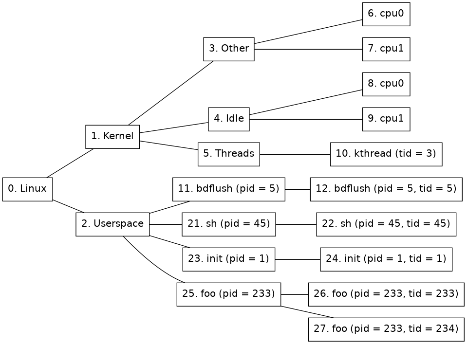
Figure 2. Node tree of a Linux tracker
There are ten different kinds of nodes:
-
Kernel node
(Node 1 in figure 2.) This node represent the kernel half of Linux. Each processor currently executing in kernel space will be active on this node.
-
Other node
(Node 3 in figure 2.) This node is used to group activity that is not being represented by any of the other nodes. For example when a user space process does a system call.
-
Other node's child nodes
(Nodes 6 and 7 in figure 2.) For each processor that is available to the system a new node will be created here.
-
Threads node
(Node 5 in figure 2.) This node is used to group all kernel threads under one node. If a kernel thread is currently active, so will this node be.
-
Kernel thread nodes
(Node 10 in figure 2.) A new kernel thread node is created for each new kernel thread. When the task is terminated, the node is destroyed. When the kernel thread is executing, this node will be active. Thread nodes have the following extra properties in addition to the standard ones:
- tid
The integer tid ("thread ID") associated with the thread. This is unique in the whole OS instance.
-
Idle node
(Node 4 in figure 2.) This node is used to group activity that is identified as the system being idle. If a processor is idling then this node will be active.
-
Idle node's child nodes
(Nodes 8 and 9 in figure 2.) For each processor that is available to the system a new node will be created here. It will be active when the processor is identified as being idle. This is approximated by the time when a swapper task is running on the specific processor.
-
Userspace node
(Node 2 in figure 2.) All processors executing in user-space will be active on this node.
-
Process nodes
(Nodes 11, 21, 23, and 25. in figure 2.) Immediately below the user-space node, there is one process node for each process in the system. A new process node is created for each new process, and when a process is terminated, its node is destroyed. Process nodes have the following extra properties in addition to the standard ones:
- binary
A string containing the path to the binary that the process is running. This property will only exist if the binary is known.
- pid
A list containing the pid of this process. This is the same as the thread group ID.
-
Process thread nodes
(Nodes 12, 22, 24, 26, and 27 in figure 2.) Immediately below each process node is one or more thread nodes representing the threads in the process. Just like the process nodes, these are created and destroyed on demand. Thread nodes have the following extra properties in addition to the standard ones:
- pid
The integer pid ("process ID") associated with the thread. This is the same for all threads in a process and matches pid for the parent process node.
- tid
The integer tid ("thread ID") associated with the thread. This is unique in the whole OS instance.
The Linux tracker composition object includes some useful commands. Use the help command for a specific command to get more detailed information about that command.
-
detect-parameters
Detect parameters to be used by the Linux tracker. The system has to be booted for detection to succeed and for some systems kernel debug information must be provided in order for the tracker to be able to detect parameters. Use the -load flag to load the detected parameters directly and the param-file argument to save the parameters to disk.
simics> board.software.tracker.detect-parameters symbol-file=System.map -load param-file=detect.params
[board.software.tracker.tracker_obj info] Detecting settings using 1 processor(s)
[board.software.tracker.tracker_obj info] Failed to detect kernel module parameters
[board.software.tracker.tracker_obj info] Successfully detected parameters
Saved autodetected parameters to detect.params
-
load-parameters
Load configuration parameters for the Linux tracker from a file.
simics> board.software.tracker.load-parameters detect.params
<
-
save-parameters
Save the current configuration parameters to a file.
simics> board.software.tracker.save-parameters saved.params
<
-
supports-parameters
Check if a parameters file is supported by the Linux tracker.
simics> board.software.tracker.supports-parameters saved.params
Parameters of kind linux_tracker are supported by board.software.tracker
-
log-syscalls
Log system calls made by the Linux system.
simics> board.software.tracker.log-syscalls
<
simics> c
[board.software.tracker.mapper_obj info] Syscall: 'nanosleep' (35) on node 948 (board.mb.cpu0.core[0][0])
This section gives an overview of systems that are known to work for the Linux tracker. It has been tested on many systems in order to verify that it works using the Linux kernel versions listed in the figure 3. However, as it is dependent on specific kernel configuration it may not work for a given system even if the kernel version is the same. Even if a kernel version is not listed here as tested it might still work with the tracker.
The following keywords are used in figure 3 and figure 4:
- Kernel thread
Indicates if the tracker supports tracking individual kernel threads.
- Arch
The target architecture.
- Version
Indicates the operating system version, or distribution version known to work.
| Arch | Version | Kernel threads |
|---|
| arcv2 | 4.2 | yes |
| arm32 | 2.6 | no |
| arm32 | 3.3 | no |
| arm64 | 5.0 | no |
| mips64 | 2.6 | yes |
| ppc32 | 2.6 | yes |
| ppc32 | 3.8 | yes |
| ppc64 | 2.6 | no |
| x86 | 2.6 | no |
| x86 | 3.7 | no |
| x86_64 | 2.6 | no |
| x86_64 | 4.18 | no |
Figure 3. Tested Linux Kernel Versions
| Arch | Version |
|---|
| arm32 | Wind River Linux 4.3 |
| ppc32 | Wind River Linux 3.0 |
| ppc32 | Wind River Linux 4.3 |
| ppc32 | Wind River Linux 5.0 |
| ppc64 | Wind River Linux 5.0 |
| x86 | Wind River Linux 4.3 |
| x86_64 | Wind River Linux 3.0 |
| x86_64 | Wind River Linux 4.0 |
| x86_64 | Wind River Linux 4.3 |
Figure 4. Supported Linux Systems
The Linux tracker will generate events (see section 2.6) when system calls are made in the target software. The name of the event will be "syscall". A system call notification can be registered in the following way:
notify_event(node_id, "syscall", recursive, syscall_cb, data)
The event_data argument of the callback will be a dictionary containing the system call number and name:
{'name': <name>, 'number': <number>}
The Linux tracker will try to translate the system call number into the system call name, such as fork or write, if no translation is available the name will be unknown.
The Linux tracker can be used to track which kernel modules are loaded and at what addresses their sections are loaded at. This information will then be provided to the debugger. This feature is only supported for x86-64 and arm64 architectures, but could potentially work for other architectures as well.
There is a <linux_tracker>.list-kernel-modules command on the Linux tracker object and the tracker composition object. This can be used to display all known modules and their sections. Use help on that command for options.
In order for kernel modules to be tracked, parameter detection (see 2.13.6) symbols have to be provided and must contain the 'modules' symbol. If plain symbols (usually kallsyms or System.map) are provided, then there must be at least one kernel modules inserted and live in order to be able to find kernel modules parameters. Also it is likely needed that at least one processor is running the kernel while performing the detection. If an ELF symbol file (usually vmlinux) with debug information is provided then kernel module parameters can be found without having to have any module currently loaded.
Kernel modules will be included by default in the parameters if found, but can be enforced to be found by using the kernel-modules argument to the <linux_tracker>.detect-parameters command and setting it to TRUE. Detection will then fail if kernel module parameters are not found. To leave out tracking kernel modules, instead set this argument to FALSE.
In order for the debugger to be able to find the kernel module binaries, the <linux_tracker>.set-kernel-module-path can be used. This should specify the base directory on the host where the kernel module binaries (with .ko extension) that should be debugged on the target system are located. That directory and it's sub-directories will be scanned for kernel modules and then they will be matched against modules found by the tracker. In order for modules to be matched with files under this path, the file must be named as the kernel module, with the exception that the file can have a hyphen (-) where the name has an underscore (_), and excluding the .ko suffix.
When the kernel module path is passed to the debugger it will apply any added path maps to the path, meaning that this can be re-mapped to another location using the debugger's add-pathmap-entry command.
Another way to debug one or a few kernel modules is to apply path maps for each kernel module name, to the matching kernel module .ko binary on disk. Something like:
add-pathmap-entry foo_module /tmp/kernel-build/modules/foo-module.ko
Kernel modules can usually not be found if the tracker is enabled while all processors are running outside of the kernel. When that occurs, finding the initial kernel modules will be postponed until a processor has entered the kernel and proper page tables are loaded.
The Linux tracker depends on its parameters file in order to know how to track the target software. If the target software is updated with a new or reconfigured kernel the parameters needs to be regenerated. This can be done with the detect-parameters command. In order for the parameters detection to work the Linux system must be booted. The detect-parameters command may also require some arguments in order to succeed with the detection, see the build-in help for further details. Use the -load flag to load the detected parameters directly.
If the system does not contain any OS Awareness software object at all, the system will have to be configured as described in section 2.9. After the OS Awareness object has been created, the Linux tracker composition objectcan be added with the insert-tracker command. The tracker argument should be the linux_tracker_comp module.
- The Linux
detect-parameters command can in rare cases take up to ten minutes to complete.
- Trackers that support kernel space information only provide a best effort view. The tracker will only show what the OS reports as active, it will not trace exceptions, interrupts, short lived work that is re-using another context, etc that does not cause a context switch. In addition to that, a userspace process executing in the kernel space will report its activity under the Other node.
- The 2.13.3 section list system configurations that the tracker is known to work on; it may very well work on other systems as well. However, even small configuration changes (especially kernel configuration options and shell) may cause the tracker to not work on the same kernel; this is usually not a problem.
- Shutting down or rebooting an OS while having an active tracker is not supported.
- Process relationship, such as a process' parent, children, or siblings, is not exposed in the node tree.
- The MIPS64 Linux tracker can only find the current task when breaking at the
finish_task_switch function. So no tasks will be found directly after a enable-tracker command, instead tasks will be found after that function has run.
- The MIPS64 tracker requires a symbol file containing the
finish_task_switch symbol when detecting parameters.
- The ARCv2 tracker requires a symbol file containing the
_current_task symbol when detecting parameters.
- The ARM64 tracker can only track 64-bit tasks correctly. For 32-bit tasks syscalls and binary properties will be incorrect.
- The tracker will not work for an ARM 32-bit Linux running on an ARM64 processor.
- For x86-64 there is limited support for a Linux target that runs KVM guests. The tracker will ignore any haps or memory accesses that the guest performs, but no tracking of the guest is available. This support can be disabled by clearing the
enable_vm_support attribute.
- For other targets than x86-64 there is no support for Linux targets with KVM guests running.
- Kernels with randomized base (
RANDOMIZE_BASE kernel configuration option) are only supported for x86-64.
- The Linux tracker does not work together with VMP. VMP will be disabled automatically when the tracker is enabled.
The CPU mode tracker, in module cpumode-software-tracker, tracks processor state for the processors of a system. It will keep track of which mode each processor is active in. This tracker can for example be useful to track when an operating system is active in kernel mode and when it is running a user program for an operating system for which there is no dedicated tracker available.
In order to use the CPU mode tracker use the insert-tracker command with the cpumode_software_tracker_comp class as tracker, see section 2.8 for more information about tracker configuration.
Figure 5 shows an example of the CPU mode node tree representation. One of the right-most nodes will be active on each processor depending on the mode that the processor is currently running in. In other words, one of the nodes 4, 5 or 6 will be active for cpu0 and one of the nodes 7, 8 or 9 will be active for cpu1.
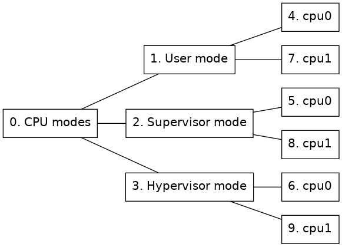
Figure 5. Node tree of a CPU mode tracker
The Partition tracker is used to add separate trackers for different processors in the system. This can be useful if different operating systems are run on different processors.
The partition tracker is a stacked tracker where other trackers will be inserted as guests to the partition tracker.
This section describes how the partition tracker is represented in a node tree.
The partition tracker will be at the root of the node tree. Then each guest of the partition tracker will be represented with that guests representation of a node tree rooted at a child node of the partition tracker root node. A partition can also be empty, meaning that it does not contain any guest tracker.
Figure 6 shows an example of how a node tree, containing a partition tracker with two cpu mode trackers and an empty partition as guests, could look like.
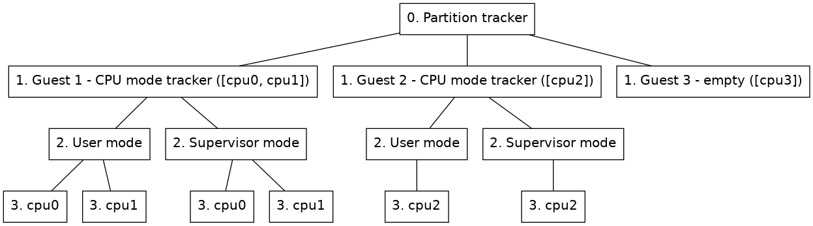
Figure 6. Node tree of a Linux tracker
-
Guest node
(Nodes on level 1 in figure 6.) This node will contain the root node of the guest inserted under the partition tracker. Two extra properties will be added to this node besides the guest tracker's original root properties.
- part_id
A unique identifier for each guest partition.
- cpus
A list of processors assigned to the partition.
By default the name property of the node will also be updated so that the name is prefixed with the partition name. This updating of the name can be removed by setting the include_partition_name attribute of the partition mapper to false.
The partition tracker includes some commands to manage guest partitions and parameters.
-
insert-empty-partition
Inserts a new partition that is not associated with any tracker. Some processors, cpus, have to be set for this partition and a partition name, partition, will also have to be specified. This partition will show up in the node tree when the OS Awareness framework is enabled, but that node will not have any children or be active at any point. A guest tracker can later be added to this node with the insert-tracker command.
-
insert-tracker
Inserts a new partition associated with a tracker component either on an existing empty node or as a new guest partition.
The component of the guest tracker is specified through the tracker argument of this command.
If adding a new guest, some processors associated with the partition will have to be specified through the cpus argument and a partition name has to be specified through the partition argument.
If a new tracker is added to an empty guest, the node argument is used to specify which guest node to insert the tracker on.
Optionally parameters can be passed on to the guest component via the parameters argument.
The component of the guest will end up in the component hierarchy under the partition tracker component, named either as the specified name argument or as the partition name prefixed with guest.
-
remove-partition
Remove an existing partition by selecting either a partition name, a partition node or a partition id.
-
load-parameters
Load configuration parameters for the partition tracker from a file.
-
save-parameters
Save the current configuration parameters to a file. If the no-children argument is given the parameters of the guest trackers will not be included in the saved file, it will then just include the partition tracker and which type of guests it has. By default the guest trackers parameters are also saved in the configuration file.
-
supports-parameters
Check if parameters file is supported by the partition tracker.
- Inserting a guest tracker and adding parameters to that guest at the same time might not work for all guest trackers as processors will not yet be available to the guest when the parameters are set. The Linux tracker for example requires to be able to get all processors from its parent when setting parameters and will fail if parameters are set directly when inserting it as a guest under a partition tracker. The workaround is to first add it as a guest tracker and then load parameters for that guest afterwards.
- If enabling or adding processors fails for some guest the partition tracker will not take care of disabling or removing processors for already enabled guests.
The UEFI Firmware Tracker tracks UEFI, Intel® Slim Bootloader (Intel® SBL) and Intel® Firmware Support Package (Intel® FSP) module loading and unloading to allow source code debugging of UEFI systems. The UEFI Firmware Tracker is implemented as an OS Awareness component. Read more about OS Awareness in chapter 2.
Supported target platforms for the tracker are X86 and ARM64.
While the tracker works on both Windows and Linux and can track UEFI, Intel® Slim Bootloader (Intel® SBL) and Intel® FSP, there are some details to consider when it comes to source code debugging, see section 2.16.3.
Knowing how the UEFI tracker works is optional, but understanding the basics may be useful during configuration. Tracking is handled with several techniques which handles modules loaded in the different UEFI phases.
The below tables lists the tracking techniques available on X86 (figure 7) and ARM64 (figure 8) and for which phases, or modules the tracking techniques work. Note that some tracking techniques may find other module types as well. However, it may not support unload for example.
| Tracking Technique | Default | SEC and PEI (static) | PEI (dynamic) | DXE | SMM | Intel® FSP |
|---|
| Map File | Disabled | Yes | — | — | — | — |
| Pre-DXE | Disabled | — | Yes | — | — | — |
| DXE | Enabled | — | — | Yes | — | — |
| SMM | Enabled | — | — | — | Yes | — |
| Execution (1)(2) | Enabled | Yes | Yes | — | — | Yes |
| Notification (2) | Enabled | Yes | Yes | Yes (3) | — | — |
| Reset (4) | Enabled | — | — | — | — | — |
| OS Hand-off (5) | Enabled | — | — | — | — | — |
| |
|---|
| Detection of module unload is not supported. |
| Will not remove SEC and PEI modules when UEFI enters DXE (which DXE tracking supports). |
| Requires that UEFI has been updated with notification support, see appendix B. |
| Reset tracking does not track modules but will clear the module list when detecting a processor reset. |
| OS Hand-off tracking does not track modules, but improves simulation performance while executing the OS.. |
Figure 7. Tracking techniques available on X86 targets.
| Tracking Technique | Default | SEC and PEI (static) | PEI (dynamic) | DXE |
|---|
| Map File | Disabled | Yes | — | — |
| DXE | Enabled | — | — | Yes |
| Execution (1)(2) | Enabled | Yes | Yes | — |
| |
|---|
| Detection of module unload is not supported. |
| Will not remove SEC and PEI modules when UEFI enters DXE (which DXE tracking supports). |
Figure 8. Tracking techniques available on ARM64 targets
The UEFI firmware tracker commands are used to configure the tracker and also to provide information about the UEFI system. The commands are:
-
<uefi_fw_tracker>.detect-parameters
Detect parameters and load them directly by using the -load flag. Example for the target viper:
viper.software.tracker.detect-parameters -load
Parameters can also be saved to a parameter file which can then be loaded with <uefi_fw_tracker>.load-parameters. Use the param-file argument to specify a file to save.
-
<uefi_fw_tracker>.load-parameters
Load configuration parameters for the tracker from a configuration parameter file such a file created by <uefi_fw_tracker>.detect-parameters. Example for the target viper:
viper.software.tracker.load-parameters
-
<uefi_fw_tracker>.info
Show information on how the tracker was configured. Example for the target viper:
viper.software.tracker.info
-
<uefi_fw_tracker>.status
Show the tracker enabled state, list all UEFI modules currently loaded, and show various UEFI system information. Example for the target viper:
viper.software.tracker.status
-
<uefi_fw_tracker_comp>.list-modules or <uefi_fw_mapper>.list-modules
List the UEFI modules that the tracker is aware of. To list all modules, specify max=0.
For more information about the commands, see:
In order for source code debugging to work, there are some requirements that must be met:
- The host type in combination with the compiler tool chain used to compile UEFI must be supported (see table in Figure 9).
- The UEFI system must have been compiled with debug information.
- The debug information and source files must be available to TCF.
| Compiler Tool Chain | Microsoft Windows | Linux |
|---|
| Microsoft Visual Studio | Supported (1) | — |
| ELF/DWARF compiler such as GCC | Supported | Supported |
| |
|---|
| (1) | Requires that DBGHELP.DLL is available to TCF. |
Figure 9. Supported combinations of of *host type* and *compiler tool chain*
To get the best source code debugging experience when debugging UEFI (or any other binary), please compile with as much debug information as possible and as little optimizationas possible.
If copying an already built UEFI system from another computer, it is important to keep files that are needed for debugging. There is usually a DEBUG folder for each UEFI module that contains the files needed for debugging, and it is important that at least the some of the files are kept. As an example, lets say that the module SecCore has a directory Build/.../SecCore/DEBUG. Then at least the following files must be kept
| Microsoft Visual Studio | ELF/DWARF compiler such as GCC |
|---|
| SecMain.efi | SecMain.efi |
| SecMain.dll | SecMain.dll |
| SecMain.pdb | SecMain.debug |
Some platform start scripts come with UEFI Firmware Tracker support. If that is not the case, a tracker configuration must be added.
Here is an example of how to configure the viper system. For more in-depth information on OS Awareness configurations, read section 2.9.
# Specify the file that will contain the tracker parameters.
if not defined tracker_params { $tracker_params = "uefi.params" }
# Load uefi-fw-tracker and insert it into the tracker hierarchy.
load-module uefi-fw-tracker
viper.software.insert-tracker tracker = uefi_fw_tracker_comp
# Detect the parameters which will be written to the $tracker_params.
viper.software.tracker.detect-parameters -overwrite param-file = $tracker_params
# Load the parameters.
viper.software.tracker.load-parameters $tracker_params
# Enable the tracker.
viper.software.enable-tracker
If the target configuration scripts configures another OS-Awareness tracker, this should be deleted first with the command <os_awareness>.delete-tracker, for example:
# Delete the current tracker to allow configuration of the UEFI tracker.
viper.software.delete-tracker
After incorporating the tracker configuration and starting the simulation, you can debug the system with the debugger commands in Simics CLI. For more information about debugging with Simics in general, see chapter 3.
This section describes common problems and how to fix them.
-
If debugging of UEFI does not work correctly, please perform the following steps in order:
- Start by troubleshooting tracking problems in figure 10, 11, and 12 These steps are needed to be sure that the tracker configuration is correct enough to allow finding at least one UEFI module.
- When the tracker works well enough to at least find an UEFI module, but debugging problems remain, continue to troubleshoot debugging in figure 13, 14 and 15
-
If the problem is that the UEFI tracker degrades simulation performance:
-
If the code or situation that demands debugging can be reached by running simulation a specific time or by setting for example an address breakpoint (which does not require debug information and hence not a tracker either):
- Start the simulation without the tracker enabled.
- Run until the time or address that requires debugging
- Enable the tracker to allow source code debugging
Unless rebuilding UEFI is needed and the same code needs to be debugged several times, saving a checkpoint (write-configuration) after reaching the situation that requires debugging, and for subsequent steps, load the checkpoint (read-configuration), and then enable the tracker may be an option.
- Pre-DXE tracking has a lot of performance penalty. If Pre-DXE tracking is used, consider if Execution tracking can be used instead.
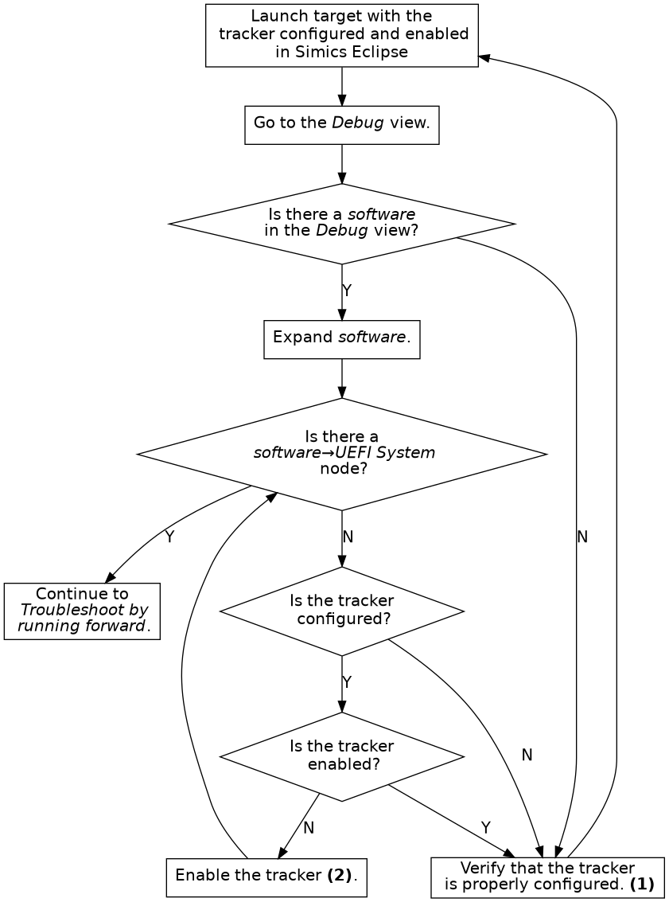
Figure 10. Troubleshoot the tracker configuration
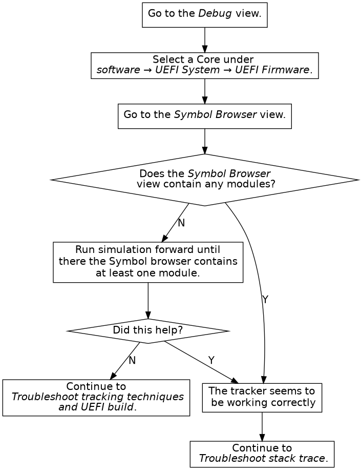
Figure 11. Troubleshoot by running forward. Not every address (for example the reset vector) has debug information.
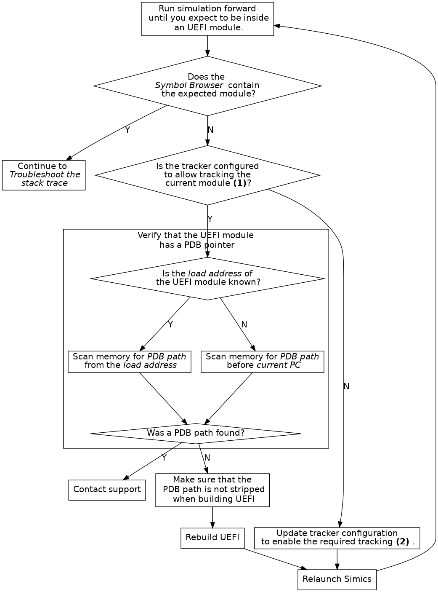
Figure 12. Troubleshoot tracking advanced
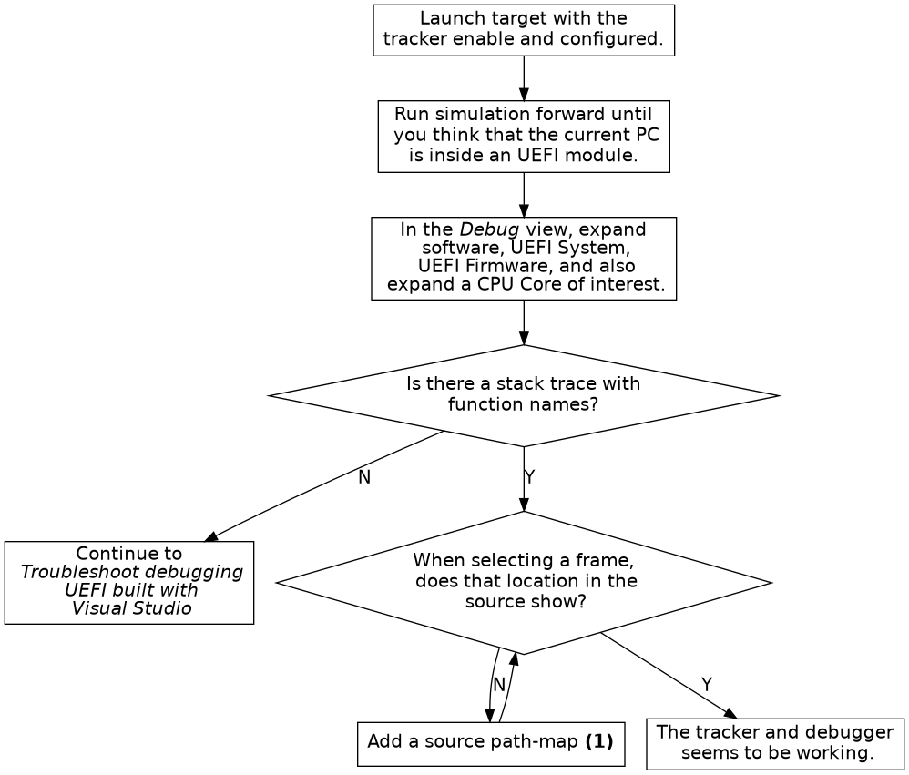
- (1) See the end of section 3.1.2.
Figure 13. Troubleshoot stack trace
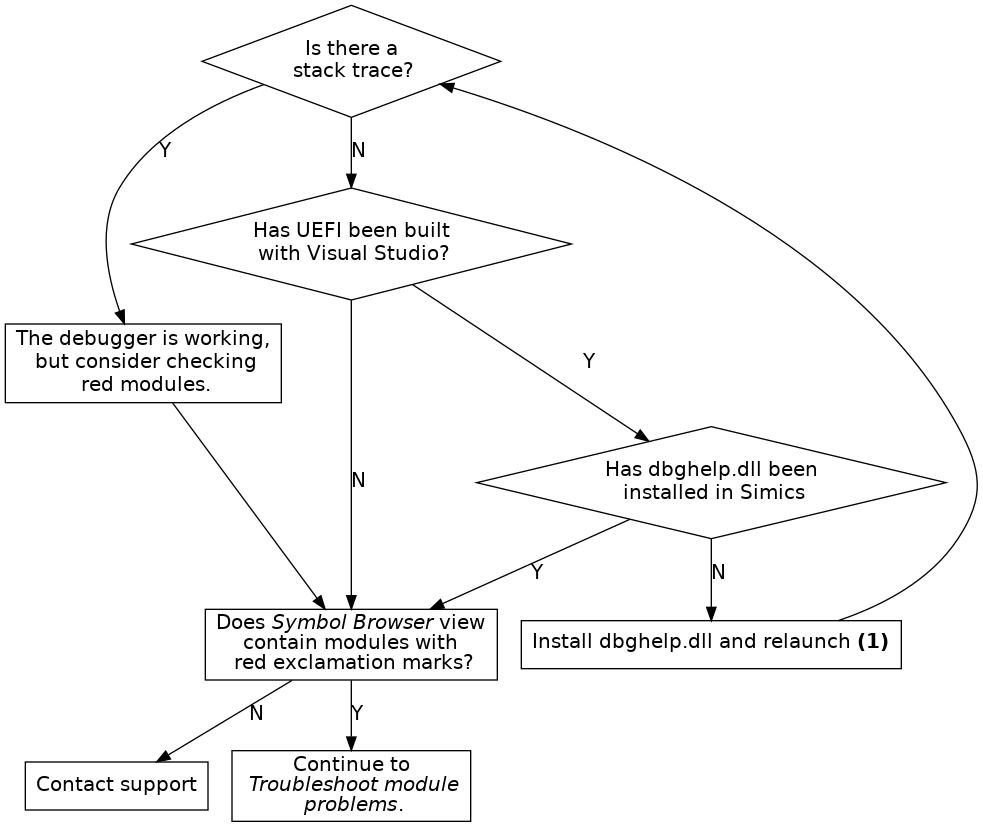
Figure 14. Troubleshoot debugging UEFI built with Visual Studio
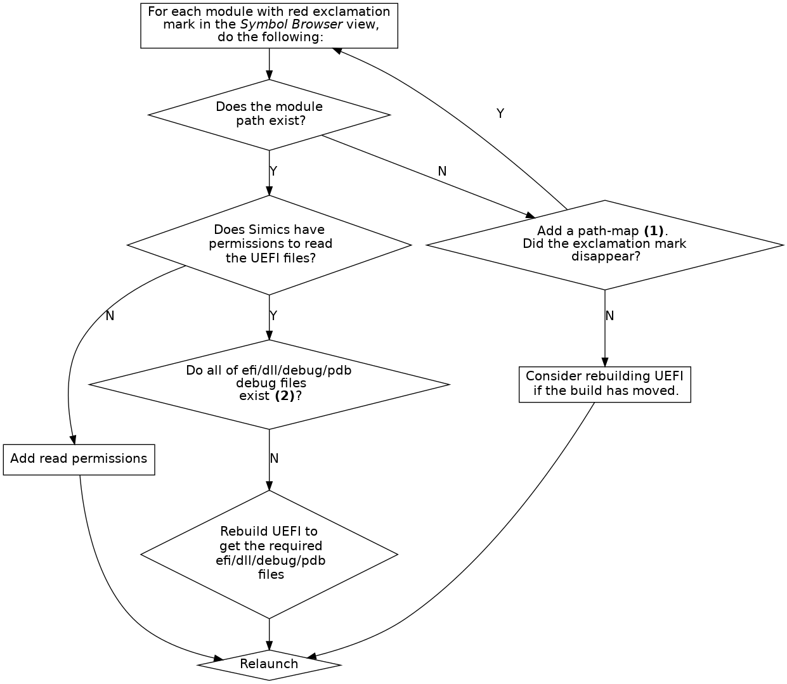
- (1) See the end of section 3.1.2.
- (2) See section 2.16.3.
Figure 15. Troubleshoot module problems
-
Debugging UEFI systems compiled with Visual Studio only works on Windows hosts and require DBGHELP.DLL.
-
When debugging UEFI systems compiled with Visual Studio, the paths to the module binaries must be shorter than 256 characters. This is a limitation in DBGHELP.DLL.
-
Pre-DXE tracking does not support tracking of Terse Executable (TE) modules.
-
When tracking the DXE phase, breakpoints are added on each 4 MB interval in the area specified by dxe-start and dxe-size. Any address within this range that cannot be read when the tracker is enabled is ignored. If the EFI_SYSTEM_TABLE_POINTER is placed in memory that is not readable when the tracker is enabled, DXE will not be detected. As a workaround, either toggle the tracker when in DXE, or set enable_dxe_phase_mem_map_changed_hap to true.
Setting enable_dxe_phase_mem_map_changed_hap has a severe performance impact on some systems.
-
Multi socket system has not been tested and are not officially supported, but may work.
-
Only modules that have a PDB pointer containing a PDB file path can be tracked.
-
Execution tracking does not track unloading of modules.
-
For full SMM tracking both SMM and execution tracking modes must be enabled.
-
Only modules that have a module path (IMAGE) in the map-file will be tracked by the map-file tracker. If these modules have a valid PDB pointer, and are executed, it is possible to track them using the execution tracker.
-
On ARM64, Pre-DXE tracking is not supported. To track dynamic PEI modules, Execution tracking should be used.
-
On ARM64, Reset tracking is not supported. The recommended workaround is to add a breakpoint on reset, and toggle (disable and then enable) the tracker if reset occurs.
Simics includes a command-line debugger that allows you to perform source level, multi-core, multi-target debugging of your target code running in Simics.
An API for scripting against the debugger is available, see section 3.3.
This section provides an overview of the Simics command-line debugger and describes how its pieces work together. The tutorial in Getting Started With Simics describes how to use these commands in a complete workflow. For details about the commands, see the Simics Reference Manual.
Simics is a full-system simulator; in addition to the thing you are trying to debug, it probably runs a complete operating system (or several, under a hypervisor). To limit the scope of your debugging to just one process (or task, or kernel thread, etc.), you use an appropriate debug context. Each debug context corresponds to some part of the target system. It can be a processor or the memory space of a processor, or a software abstraction like a process or thread. There are also debug contexts that group other contexts. Section 3.1.1 describes debug contexts in more detail.
The debugger will only create debug contexts for the software in the system if you have configured OS awareness and enabled it. How to set up OS awareness is described in chapter 2. If you do not use OS awareness you can debug directly on the processors instead, but then the debugger will not track when the operating system on the target switches between different processes or tasks.
To do source level debugging you need to tell the debugger about the binaries (executable files and shared libraries) that the part of the system you want to debug is using. This is described in section 3.1.2. That section also explains how to tell the debugger where to find the source code for your program, if needed.
Section 3.1.3 describes how to manage break- and watch-points with the command line frontend.
This section only describes the C/C++ debugger specific concepts. You can still use any other Simics commands to help you debug your code.
The debugger presents the target system as a set of debug contexts. Each debug context represents one interesting part of the system. It can be a software concept, like a process, a thread or a task, or a processor core or the physical memory space of a processor. To provide context there are also debug contexts that provide grouping, like a machine, or a group of all user space programs on a Linux system.
When you interact with debug contexts directly you usually interact with a context running code, such as a thread or a processor core. In this text we call such a debug context a thread. A thread allows you to step through the code and to inspect variables scoped to the current location in the code.
By default Simics does not activate the debugger; global stepping commands, etc will be directed at the current processor in Simics, and not to a debug context. There are two ways to activate the debugger and get access to debug contexts. The first is to enable the debugger with the enable-debugger command. This will make Simics track debug contexts and automatically selects an initial debug context if possible. The second way is to explicitly select a debug context with the debug-context command. This will set a current debug context and will also activate the debugger.
You can disable the debugger with the disable-debugger command. This disable the debugger and Simics returns to the default behavior of the global stepping commands, etc.
Once Simics tracks debug contexts, Simics will update the current debug context to the currently running thread every time the simulation stops. The current debug context is the debug context that all global step and inspection commands will interact with. This means that when you have hit a breakpoint or completed a step you can use the global commands to investigate the state of your software and to continue stepping through the code.
Once you have a debug context you can use it to step through the code and inspect its state. When the debugger is enabled and you have a current debug context you can use the global versions of these commands. The commands are also implemented directly by the debug context, which means that you can use them on debug contexts that are not the current debug context. You can do this even if the debugger is disabled.
Here is a summary of the commands you can use:
- step-line
Run until the debug context reaches another line in the program.
- next-line
Run until the debug context reaches another line, but skip over calls made by the current function.
- finish-function
Run until the current function returns.
- step-instruction
Run until the debug context reaches another instruction.
- next-instruction
Run until the debug context reaches another instruction, but skip over calls made by the current function.
- sym-value
Get the value of a symbol or a C expression.
- sym-write
Write a new value to a variable.
- sym-type
Get the type of a C expression.
- sym-address
Get the address of a C lvalue expression.
- sym-string
Get the contents of a C string identified by a C expression.
- list
List source code.
- sym-source, sym-file
Show where an address or function can be found in the source code.
An active thread also has a stack of call frames, or just frames. Simics provides commands to show the stack and to select which frame other commands should use to find local variables. The stack goes from the innermost frame up towards the outermost frame. The current stack frame is reset to the innermost frame every time Simics stops executing.
- stack-trace
Show the stack.
- frame
Select the frame with the given number. The currently executing function has frame 0, its caller has frame 1, and so on.
- up
Select the frame with the next higher number.
- down
Select the frame with the next lower number.
To perform source level debugging you need to tell the debugger about the binaries that the debug contexts you want to debug are running. These binaries must be in ELF format and should contain debug information in Dwarf format. Once this is done you can set breakpoints, step through your program, and inspect the value of variables in it.
If you try to debug optimized code you may not be able to view all variables, and the mapping between line information and addresses in memory may be confusing.
The debugger keeps a memory map to locate functions, variables, etc in memory and to find debug information for target code. You add entries to the memory map using the add-symbol-file command. The command uses context queries to limit which debug contexts the information applies to. You can read more about context queries in section 3.2. Here is a summary of the commands to manage the memory map:
For simple programs you just have to provide the main binary, but for more complex cases, with shared libraries or dynamically loaded modules, you may need to add several symbol files for your program.
If the source code paths in the debug information in the binaries do not match the location of the source code on your host system, you also need to tell the debugger how to find the source code if you want the debugger to be able to show you the actual source code.
Tell the debugger where to find the source code for your program using the add-pathmap-entry command. As with the add-symbol-file command, you can use context queries to limit which debug contexts the information applies to. Here are the commands you can use to manage the path translation:
- add-pathmap-entry
Add a translation from a path in the debug information to a path on the host.
- clear-pathmap
Remove all translations of paths set from the command line.
- show-pathmap
Show all translations of paths set from the command line.
The C/C++ Debugger allows you to set breakpoints on source code lines and on variables and expressions.
Read and write breakpoints are commonly called "watchpoints", and "breakpoints" is often taken to refer exclusively to execution breakpoints. In Simics speak, however, we use "read breakpoint", "write breakpoint", and "execution breakpoint" for the specific types, and just "breakpoint" when we wish to leave the type unspecified.
Breakpoints are set with two simple commands:
Both commands take flags to specify if they should trigger for reads, writes, and/or execution. A watchpoint is simply a breakpoint with the read or write flag set. In this section we use the term breakpoint to mean both watchpoints and breakpoints.
Breakpoints can be set on all contexts matching a context query. This allows you to set breakpoints that will trigger in threads or processes that do not exist yet. The default context query matches all debug contexts.
You can also set breakpoints for a specific debug context by using the bp-break-source-location and bp-break-source-line commands that are namespaced on debug contexts. This allows you to limit the breakpoint to a particular debug context, but this can only be done for debug contexts that already exist.
Breakpoints set with bp-break-source-line and bp-break-source-location are managed by commands namespaced on the bp object in Simics. Here are the commands you can use to manage such breakpoints:
Simics implements a query-based system to specify subsets of contexts. The queries specify context properties and what values they must have in order to match. In addition, a query can filter based on a context's ancestors in the context hierarchy.
A query consists of a sequence of parts separated by a slash character (/). This sequence specifies a path through the context tree.
A context matches the query if the last part of the query matches the properties of the context, and the parent of the context matches the query excluding the last part. The properties of a context match a part if each property specified in the part matches the property of the same name in the context, or if the name of the context matches the string specified in the part.
The contexts are assumed to be placed in a tree. Each context has zero or one parent. If it has zero parents it is a child of the root of the tree.
There are also two wild cards. The part * matches any context. The part ** matches any sequence of contexts. If the query starts with a /, the first part of the query must match a child of the root of the context tree.
The * wild card matches an entire node, not part of its name or attribute. Thus, a query such as /foo/bar/baz* is invalid, since * can only be used on its own, between / or at the end of the query after a /.
query = [ "/" ], { part, "/" }, part ;
part = string | "*" | "**" | properties ;
properties = property, { ",", property } ;
property = string, "=", value ;
value = string | number | boolean ;
string = quoted string | symbol ;
quoted string = '"', {any-character - ('"' | '\')
| ('\', ('"' | '\'))}, '"' ;
symbol = letter, { letter | digit } ;
number = digit, { digit } ;
boolean = "true" | "false" ;
letter = ? A-Z, a-z or _ ? ;
digit = ? 0-9 ? ;
any-character = ? any character ? ;
This section illustrates the syntax with some examples, and what a user might mean when providing such a query:
- httpd: matches all contexts named "httpd".
- pid=4711: matches any context with a property pid, which has the value 4711.
- /server/**: matches all contexts that are descendants of the top level context named "server".
- "Linux 2.6.14"/Kernel/*: matches all kernel processes in operating systems named "Linux 2.6.14".
- pid=4711/*: matches all threads in processes with the pid 4711.
- /client/**/"rule30.elf": matches the context for program rule30.elf running on the machine called
client.
- /server/**/HasState=true: matches all threads that are descendants of the context "server". Contexts with no state, typically container, do not match the query.
The Simics debugger is built on top of the target connection framework (TCF) technology, which introduces the context query concept. The above text describes the standard TCF syntax for context queries. It is very similar in principle to the process trackers node path concept.
To make context queries work better with the CLI syntax, and look closer to node paths, the syntax of TCF context queries in the command line has been modified. The difference is minor, as it impacts only the double quote character (") used to quote a string with non-alpha-numeric characters. In the command line you must either escape this character or use the single quote character (') instead.
Originally the context query to match a context named rule30.elf is written name="rule30.elf". The corresponding node path is name='rule30.elf'. So for instance in the command line you will use:
simics> add-symbol-file context-query = "name='rule30.elf'"
or
simics> add-symbol-file context-query = "name=\"rule30.elf\""
Another example for selecting a cpu context named cpu[0], in Simics command line, the query is written:
simics> bp.source_location.break 0xfff00000 context-query = "'cpu[0]'"
or
simics> bp.source_location.break 0xfff00000 context-query = "\"cpu[0]\""
The Simics debugger comes with a series of interfaces to allow scripting against the debugger. This allows adding symbol files, looking up symbols, notifying on debugger events, stepping and more.
The API interfaces can be accessed from Python or C (also allowing C++ or DML).
The debugger API interfaces and their functions are documented in API Reference Manual. All interfaces start with debug_.
The debugger API is implemented by a Simics object, which you access through the SIM_get_debugger API function.
Here is a short introduction to the debugger API interfaces available, more detailed documentation is available in the API Reference Manual.
debug_setup - Add symbol files and mappings to the debug configuration.debug_notification - Get notification on debugger events. An event can for example be when a certain source line runs or when a context becomes activate.debug_query - Used for finding contexts that match certain criteria or creating context queries.debug_step - Perform source or instruction stepping.debug_symbol - Look up symbol information and values. Can for example be translating between address and line, getting a symbol value, finding which functions exist or getting a stack trace.debug_symbol_file - Open symbol files and get information, such as section or segment information, for that symbol file. The open symbol file can also be used to look up symbols using the debug_symbol interface.
This section provides some examples on how the debugger API can be used. All these examples require an object tcf of the tcf-agent class to be present in Simics. The object can be created by running new-tcf-agent if it is not already present.
All examples are in Python, they can be run in Simics python-mode or can be written to a file that then can be run with the run-script command.
Shows how symbol information, such as sections, source files and functions for
a symbol file can be obtained using the debugger API.
import conf
import simics
import stest
import pprint
debugger = simics.SIM_get_debugger()
(err, file_id) = debugger.iface.debug_symbol_file.open_symbol_file(
"%simics%/targets/qsp-x86/images/debug_example", 0, False)
stest.expect_equal(err, simics.Debugger_No_Error, file_id)
(err, info) = debugger.iface.debug_symbol_file.symbol_file_info(file_id)
stest.expect_equal(err, simics.Debugger_No_Error, info)
print("File info:")
pprint.pprint(info)
(err, sections_data) = debugger.iface.debug_symbol_file.sections_info(file_id)
stest.expect_equal(err, simics.Debugger_No_Error, sections_data)
stest.expect_equal(sections_data[0], "ELF", "Should be an ELF binary")
sections = sections_data[1]
print("\nExecutable sections:")
for section in sections:
if section.get("executable"):
print(" 0x%08x-0x%08x: %s" % (section["address"],
section["address"] + section["size"],
section.get("name", "")))
(err, src_files) = debugger.iface.debug_symbol.list_source_files(file_id)
stest.expect_equal(err, simics.Debugger_No_Error, src_files)
print("\nSource files:")
for src in src_files:
print(" '%s'" % src)
(err, functions) = debugger.iface.debug_symbol.list_functions(file_id)
stest.expect_equal(err, simics.Debugger_No_Error, functions)
print("\nFunctions:")
for function_data in functions:
if function_data["size"] == 0:
continue
addr = function_data["address"]
print(" 0x%08x-0x%08x: %s" % (addr, addr + function_data["size"],
function_data["symbol"]))
(err, err_str) = debugger.iface.debug_symbol_file.close_symbol_file(file_id)
stest.expect_equal(err, simics.Debugger_No_Error, err_str)
This example has showed how to:
- Open an symbol file as a context to be used with other debugger API
functions.
- Get file information.
- Get sections information.
- List the source files in the debug information of a binary.
This example uses the debug_example file to demonstrate how
debugger API usages. Various interfaces and functions
in the debugger API will be used in this example.
import cli
import conf
import simics
import stest
# SIMICS-20853
conf.sim.deprecation_level = 0
simics.SIM_run_command_file_params(
simics.SIM_lookup_file('%simics%/targets/qsp-x86/firststeps.simics'),
False,
# Parameters to make simulation more deterministic (NB: VMP is
# on so we still get some uncertainty.):
[["connect_real_network", "no"],
["rtc_time", "2019-11-12 11:47:01"]])
con = conf.board.serconsole.con
prompt = "$ "
con.iface.break_strings_v2.add_single(prompt, None, None)
simics.SIM_continue(0)
(am, _) = cli.quiet_run_command('start-agent-manager')
(matic, _) = cli.quiet_run_command(f'{am}.connect-to-agent')
cli.quiet_run_command(f'{matic}.upload -executable'
r' "%simics%/targets/qsp-x86/images/debug_example"'
' "/home/simics"')
cli.quiet_run_command(f'{matic}.run-until-job')
cli.run_command('board.software.enable-tracker')
def expect_no_error(api_result):
(err, res) = api_result
stest.expect_equal(err, simics.Debugger_No_Error, res)
return res
# Get the debugger object
debugger = simics.SIM_get_debugger()
symbol_iface = debugger.iface.debug_symbol
query_iface = debugger.iface.debug_query
notify_iface = debugger.iface.debug_notification
step_iface = debugger.iface.debug_step
# Add a symbol file
ctx_query = "debug_example" # Match the target binary
add_id = expect_no_error(debugger.iface.debug_setup.add_symbol_file(
ctx_query, "%simics%/targets/qsp-x86/images/debug_example", 0, False))
local_src = simics.SIM_lookup_file("%simics%/targets/qsp-x86/debug_example.c")
compiled_src = "/tmp/debug_example.c" # nosec: /tmp is OK here
# Path map entry only needed for debugger to be able to find source file and
# display its contents. Not really needed for this example.
pm_id = expect_no_error(debugger.iface.debug_setup.add_path_map_entry(
ctx_query, compiled_src, local_src))
with open(local_src, "r") as f:
debug_example_contents = f.readlines()
def get_pc(cpu):
return cpu.iface.processor_info_v2.get_program_counter()
def context_name(ctx_id):
return expect_no_error(query_iface.context_name(ctx_id))
def print_current_line(ctx_id):
cpu = expect_no_error(query_iface.get_active_processor(ctx_id))
def addr_src_cb(src_lines, code_area):
src_lines.append(code_area)
src_lines = []
expect_no_error(symbol_iface.address_source(ctx_id, get_pc(cpu), 1,
addr_src_cb, src_lines))
stest.expect_equal(len(src_lines), 1)
curr_area = src_lines[0]
filename = curr_area["filename"].split("/")[-1]
print(f"Line '{filename}:{curr_area['start-line']}':")
if filename == "debug_example.c":
print(debug_example_contents[curr_area["start-line"] - 1])
else:
print(" <unknown contents>")
def ints_as_hex(value):
if isinstance(value, int):
return hex(value)
elif isinstance(value, list):
return f'[{", ".join(map(ints_as_hex, value))}]'
return value
def print_local_variables(ctx_id):
local_vars = expect_no_error(symbol_iface.local_variables(ctx_id, 0))
print("Local variables:")
for var in local_vars:
value = expect_no_error(symbol_iface.expression_value(ctx_id, 0, 0,
var))
print(f" {var}: {ints_as_hex(value)}")
def get_active_cpu(ctx_id):
(err, cpu) = query_iface.get_active_processor(ctx_id)
if err == simics.Debugger_Context_Is_Not_Active:
return None
expect_no_error((err, cpu))
return cpu
def run_to_known_source(ctx_id):
while 1:
stack = expect_no_error(symbol_iface.stack_frames(cbdata.ctx_id, 0, 0))
if stack[0].get("source-line") is not None:
return
step_iface.instruction_into(ctx_id)
class CBData:
ctx_id = None
stop_reason = None
print("Installing context creation callback")
cbdata = CBData()
installed_callback_ids = []
def take_snapshot_cb(name):
simics.SIM_take_snapshot(name)
def create_cb(cb_data, tcf_obj, ctx_id, updated):
event_type = "updated" if updated else "created"
print(f"Context '{context_name(ctx_id)}' {event_type}")
cb_data.ctx_id = ctx_id
simics.SIM_run_alone(take_snapshot_cb, 'creation')
cid = expect_no_error(notify_iface.notify_context_creation(
ctx_query, create_cb, cbdata))
installed_callback_ids.append(cid)
print("Installing context destruction callback")
def destroy_cb(cb_data, tcf_obj, ctx_id):
print(f"Context 'context_name(ctx_id)' destroyed")
stest.expect_equal(ctx_id, cb_data.ctx_id,
"Not the same context that was created")
simics.SIM_break_simulation("context destroyed")
cb_data.stop_reason = "destroy"
cid = expect_no_error(notify_iface.notify_context_destruction(
ctx_query, destroy_cb, cbdata))
installed_callback_ids.append(cid)
conf.board.serconsole.con.iface.con_input.input_str("./debug_example\n")
# Should run until the context is destroyed. Context ID, ctx_id, should have
# been updated at creation time.
simics.SIM_continue(0)
stest.expect_different(cbdata.ctx_id, None)
stest.expect_equal(cbdata.stop_reason, "destroy")
simics.SIM_restore_snapshot("creation")
def line_cb(cb_data, tcf, ctx_id, cpu, addr, *dont_care):
cb_data.stop_reason = "line"
cb_data.ctx_id = ctx_id
simics.SIM_break_simulation(f"line hit at 0x{addr:x}")
line_cid = expect_no_error(notify_iface.notify_line(
ctx_query, "debug_example.c", 59, 0, line_cb, cbdata))
cbdata.ctx_id = None
simics.SIM_continue(0)
stest.expect_different(cbdata.ctx_id, None)
stest.expect_equal(cbdata.stop_reason, "line")
print_current_line(cbdata.ctx_id)
print_local_variables(cbdata.ctx_id)
# A manual investigation of the variables will show that user.type seems bad.
# Find why user.type contains an illegal value but getting the address of that
# variable and planting a write breakpoint for that address.
investigated_symbol = "user.type"
addr_list = expect_no_error(symbol_iface.symbol_address(cbdata.ctx_id, 0,
investigated_symbol))
stest.expect_equal(len(addr_list), 1, "One address expected")
symbol_addr = addr_list[0]
symbol_value = expect_no_error(
symbol_iface.expression_value(cbdata.ctx_id, 0, 0, investigated_symbol))
symbol_size = expect_no_error(symbol_iface.expression_value(
cbdata.ctx_id, 0, 0, f"sizeof {investigated_symbol}"))
print(f"Address of {investigated_symbol}: 0x{symbol_addr:0{symbol_size * 2}x}")
print(f"Value: 0x{symbol_value:x}")
def addr_cb(cb_data, tcf_obj, ctx_id, cpu, insn_addr, data_addr, size):
print(f"Addresses 0x{data_addr:x}-0x{data_addr + size - 1:x} written by"
f" '{cpu.name}'@{cpu.steps}")
stest.expect_equal(cb_data.ctx_id, ctx_id,
"Hit for a different context than created")
cb_data.stop_reason = "addr"
simics.SIM_break_simulation("address written")
addr_cid = expect_no_error(notify_iface.notify_address(
ctx_query, symbol_addr, symbol_size, simics.Sim_Access_Write, False,
addr_cb, cbdata))
simics.SIM_restore_snapshot("creation")
read_value = None
while read_value != symbol_value:
simics.SIM_continue(0)
stest.expect_equal(cbdata.stop_reason, "addr")
read_bytes = expect_no_error(
symbol_iface.address_read(cbdata.ctx_id, symbol_addr, symbol_size))
read_value = int.from_bytes(read_bytes, byteorder='little', signed=False)
# Cancel the address notification so that it does not hit again.
notify_iface.cancel(addr_cid)
# Print the stack where the simulation stopped.
stack = expect_no_error(symbol_iface.stack_frames(cbdata.ctx_id, 0, 10))
print("Stack:")
for (i, frame) in enumerate(stack):
func_name = frame.get("function-name") or "<unknown>"
print(f"{i}. 0x{frame['address']:016x}: {func_name}")
# Run to known source if needed.
if len(stack) > 0 and stack[0].get("source-line") is None:
run_to_known_source(cbdata.ctx_id)
print_current_line(cbdata.ctx_id)
# Manual investigation shows that this is after the strcpy line.
line_addrs = expect_no_error(symbol_iface.symbol_address(cbdata.ctx_id, 0,
"line"))
stest.expect_equal(len(line_addrs), 1, "One address should match 'line'")
line_addr = line_addrs[0]
# Read the data (plus one extra byte) that is copied to p->info and check if
# the string is terminated or not.
read_str = expect_no_error(symbol_iface.address_read(cbdata.ctx_id,
line_addr, 21))
terminated = False
for byte in read_str:
if byte == 0:
terminated = True
break
print(f"The copied string is {'' if terminated else 'not '}terminated")
# Uninstall all installed notifications.
while installed_callback_ids:
cid = installed_callback_ids.pop()
expect_no_error(notify_iface.cancel(cid))
In this example the debugger API was used to:
- Add a symbol file.
- Plant notifications on when contexts are created and destroyed.
- Plant notifications on when a variable is modified.
- Get addresses for local variables.
- Get source line information.
- Get stack frames.
- Read memory for a context.
- Perform line stepping.
This section lists limitations for the Simics debugger in the current release of Simics.
General
- 32-bit x86 that uses segmentation will not work properly with the debugger as it works with linear addresses.
- Xtensa register windows are not handled by the debugger.
Linux Tracker
- The Linux trackers only allow access to the currently active software node on each processor core. Therefore it is not possible to access the memory of inactive tasks.
- The Linux tracker does not automatically detect the load addresses of dynamically loaded software. You have to enter this information manually.
Breakpoints
- You cannot plant a watchpoint on a local variable.
- When planting an expression breakpoint, the expression will be evaluated when the breakpoint is hit. If the expression is not valid, no error will be reported and the target will stop as if the expression was evaluated successfully.
Using Simics, it is possible to do coverage analysis of the code running on the target system. This analysis is performed using the unmodified binary running on the simulated system by profiling which machine instructions are executed. The result can be presented on source level or instruction level. For instruction level it is also possible to get branch coverage and a count on how many times an instruction at a specific address has been executed. It is also possible to save reports which can later be combined with other code coverage runs or used for report creation.
There are many ways to use the code coverage feature, both manually and as part of an automated run. However, there are basically two different use cases. In the first case both collection and analysis is done at the same time. The second case divides the collection and analysis into two different steps, possibly even combining multiple runs into one report before doing the analysis. This has the added benefit that it is possible to get the combined coverage from multiple test runs, as long as the binaries are the same.
The code coverage implementation is based on the Simics debugger, which makes it possible to use context queries to specify which context the code coverage collection should be performed on. For more details about context queries, see section 3.2. For most use-cases it is recommended to use one of the available OS Awareness trackers as this will provide knowledge about what is running on the system. OS Awareness is described in section 2.
For a list of available commands, see section 4.4. For a detailed walk through of common use cases, see section 4.3.
To be able to perform code coverage analysis, the processor model needs to support instruction profiling. In order to generate a full code coverage report that includes disassembly, either the used processor model must implement the class_disassembly interface or there must exist a disassemble module for the architecture type. Otherwise only source coverage will be available in the report.
It is often recommended to use one of the available software trackers, as that keeps track of what is running on the system. This makes it possible to match an executed instruction with the correct software entity.
A good thing to remember is that the quality of the source code mapping depends highly on the debug information and the optimization level.
In this chapter we will look into how code coverage can be collected and how the HTML report will look like. We will look at two different examples, one where we run code coverage for a Linux user space program and one where we run code coverage for a UEFI system.
The most basic use case is to collect coverage and generate a code coverage report in the same run.
For this example, we will use the firststeps machine that comes with the QSP-x86 package. First we upload the worker-opt binary to the target system. The Linux image used by the firststeps machine is already configured to have the simics-agent application running. We will use it to transfer files to the simulated machine.
Please boot the targets/qsp-x86/firststeps.simics target system and then issue the following commands inside Simics:
simics> $worker_opt_file = (lookup-file "%simics%/targets/qsp-x86/images/worker-opt")
simics> $agent = (start-agent-manager)
simics> $handle = ($agent.connect-to-agent)
simics> $handle.upload -executable $worker_opt_file /root
simics> $handle.run-until-job
Before we can start collecting code coverage we need to enable the Linux tracker and set up symbol file information.
simics> board.software.enable-tracker
simics> add-symbol-file $worker_opt_file context-query = "'worker-opt'"
The collect-coverage command is used to start collecting code coverage data from the simulation. The collect-coverage command takes a context query for which to collect coverage.
We will start collecting code coverage for the next created context that matches our context query. For more information about the available options, see the built-in help.
simics> $cc = (collect-coverage context-query = "'worker-opt'")
It is finally time to run the test program. This can be done by inputting the command on the target console and then running the simulation until the program completes.
./worker-opt 5 8 10
Depending on where the file were compiled, we may have to add a path map. Since "%simics%" may return the path from any package or project we give the exact file name here. However, normally only the directory needs to be provided.
simics> $cc.add-path-map "/tmp/worker_opt.c" "%simics%/targets/qsp-x86/worker_opt.c"
When the program has finished, or when the test case of interest is completed it is time to generate a coverage report. Again, there are many options for how to generate the HTML report available, see the built-in help for more details.
simics> $cc.html-report coverage-report
If we use a web browser to open index.html located in coverage-report directory, we will see something like figure 16.
The current page shows all known source files that were used to compile the program, in this case the worker_opt.c file. We can also see the number of executed lines and how many executable lines there are; together with a ratio, given in percentage. This is shown both in total and per file.
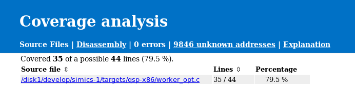
Figure 16. Code Coverage Main Page
If we follow the link to the worker_opt.c file, we are provided much more details about that particular file. First, there is a short summary about the coverage, where we can see how much coverage it is for this source file and from which mappings it was referenced, see figure 17. This is followed by the entire source file, an excerpt of the worker_opt.c is shown in figure 18. The source file is marked with green if a line was executed and red for executable lines that were not executed. Lines that are grey are not executable, this includes comment, lines that were optimized away and parts of multiline expressions. Remember that the quality of the source to instruction mapping is heavily dependent on compiler optimization level. A line will be counted as executed if at least one instruction that has been executed has a mapping to the source line in question.
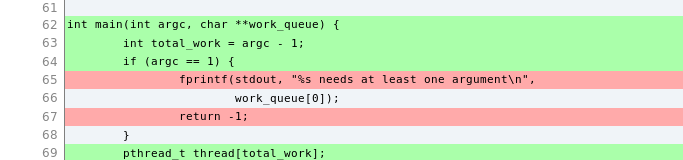
Figure 18. Code Coverage Source File Details
To get information on disassembly level we can click the Disassembly link in the header. This will take us to the disassembly overview page as seen in figure 19. This contains an overview of how many instructions the program consists of and how many of those that were executed. See the Explanation page for information and limitations about disassembly information.
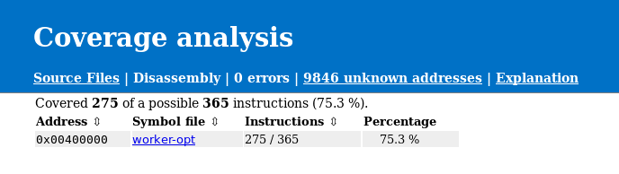
Figure 19. Disassembly Overview
To get even more details about the exact instructions that has been run, we can follow the link to the worker_opt binary, see figure 20. At the top of the page, there is a summary with details about how many instructions that were executed followed by a table with known functions addresses and how much coverage each function has. There is also a source indication if there is a known source file for the particular function. Further down, the entire disassembly is available. Again, executed instructions are marked with green and instructions that has not been executed are marked with red. It is also possible to get the number of times an instruction has been executed and if a branch instruction has been taken or not. To enable this, see the built-in help for the collect-coverage command. Again the Explanation page provides more details about how such information is presented in the report.
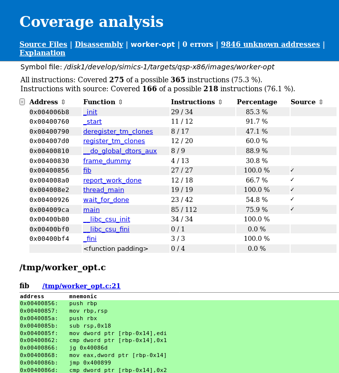
Figure 20. Source Coverage Combined
To demonstrate that it is possible to combine coverage from multiple runs we will save a raw coverage report as well. This is done with the save command.
simics> $cc.save worker-opt.cc
We will now start a second coverage collection, by using the collect-coverage command.
simics> $cc2 = (collect-coverage context-query = "'worker-opt'")
Again, we may have to setup a path map.
simics> $cc2.add-path-map "/tmp/worker_opt.c" "%simics%/targets/qsp-x86/worker_opt.c"
To be able to see the difference we will start the worker-opt program without any input argument this time. And run until the program has finished.
simics> board.serconsole.con.input "./worker-opt\n"
We can now add the previously saved coverage data to the currently gathered data. This is done with the add-report command.
simics> $cc2.add-report worker-opt.cc
To create a new html report we use the html-report command again, this time for the second code coverage object.
simics> $cc2.html-report coverage-report-2
We can now compare the source code coverage for the two runs. In the first run, see figure 18, line 65 and 67 have not been executed. In the second report, see figure 21, we can see that line 65 and 67 have been executed. This is expected as we provided too few arguments to the program. However, we can also see that line 69 has been executed. This is because we have combined the coverage from the two runs.
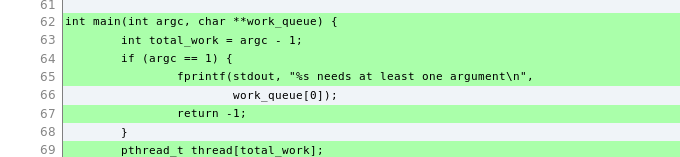
Figure 21. Source Coverage Combined
Collecting code coverage for a UEFI system is fairly easy, given you have already configured the UEFI FW tracker. For more details about the tracker, see section 2.16. This example assumes that the name of the platform is viper.
First we enable the tracker.
simics> board.software.enable-tracker
Now we need to find out how to write the context query to match the root context. We can do this by listing all debug contexts and then create a context query that matches the UEFI FW tracker's root context.
simics> list-debug-contexts
We can now see that the debug context we are interested in is /board/software/UEFI System/UEFI Firmware. We can make a simple context query based on the name.
To start collecting coverage we use the collect-coverage command.
simics> $cc = (collect-coverage context-query = "'UEFI Firmware'")
After the code coverage collection has started it is time to start the simulation and run the UEFI system up to the point we are interested in gathering code coverage for.
If the UEFI FW build is unavailable at the path it was built, then code coverage will require adding a path-map to its present location. This can be set by using the per code coverage object command, add-path-map. It is also possible to use the global add-pathmap-entry command as long as the context on which code coverage is collected has not yet been destroyed (which will never happen in the UEFI case).
simics> $cc.add-path-map "c:\\uefi\\uefi-testfiles-build.git\\uefi-edk2-simics.git" /path/to/uefi/build
We can now create the HTML report, since the UEFI FW tracker provides all mappings to UEFI modules there is no need to set up those manually.
simics> $cc.html-report uefi-report
The code coverage feature comes with a set of commands to aid the collection of coverage, post processing of the collected data, and report generation. Here follows a short summary of the commands, for a more in depth description see the built-in help.
The idea about the raw format files is to allow any user to create code coverage reports or do some automated analysis on them, in those cases that the HTML report is not the best match.
The raw format file can contain all information required to create a coverage report, such as the HTML report. It may also contain partial data, such as information about available memory mappings and executed instructions. Which can later be extended in a way that it contains all required information.
The raw format contains Python data structures that has been marshalled using the Python pickle library. In the following description a Python-like syntax is used. Where citation around a word means that the string has that exact name. Without any quotations, that item gives a short description of what it represents and a longer description will follow further down. Items within <> notation describes the type of the element. An asterisk at the end of a list means zero or more of the previous elements, while a plus at the end means one or more of the previous element.
{"version"<string>: version<int>,
"features"<string>: {feature<string>: feature_specific_field<unknown>},
"errors"<string>: [[code<int>, message<string>]*],
"unknown"<string>: {address<int>: count<int>},
"unknown_branches"<string>: {address<int>: {"taken"<string>: count<int>,
"not_taken"<string>: count<int>}},
"mappings"<string>: [
{"map"<string>: {"symbol_file"<string>: file<string>,
"address"<string>: address<int>, "size"<string>: size<int>,
"file_offset"<string>: offset<int>,
"file_size"<string>: size<int>,
"relocation"<string>: relocation<int>,
"section"<string>: section<string>},
"covered"<string>: {address<int>: count<int>},
"branches"<string>: {address<int>: {"taken"<string>: count<int>,
"not_taken"<string>: count<int>}}
"file_table"<string>: {file_id<string>: source_file<string>},
"functions"<string>: {address<int>: {"name"<string>: name<string>,
"size"<string>: size<int>}},
"data_labels"<string>: {address<int>: {"name"<string>: name<string>}},
"info"<string>: [{"address"<string>: address<int>, "op": [op<int>+],
"mnemonic"<string>: mnemonic<string>,
"format"<string>: format<string>,
"executable_lines"<string>: {line<int>: True<bool>},
"file_id"<string>: file_id<string>}*],
"src_info"<string>: {"file_id"<string>:
{line<int>: [[start_address<int>, end_address<int>]*]}},
"removed_data"<string>: {address<int>: {"size"<string>: size<int>}},
"cpu_classes": [cpu_class<string>*],
"disassembly_class": cpu_class<string>,
"errors"<string>: [[code<int>, message<string>]*]}*],
"cpu_classes": [cpu_class<string>*],
"unknown_mappings"<string>: [
{"map"<string>: {"address"<string>: address<int>,
"size"<string>: size<int>},
"covered"<string>: {address<int>: count<int>}}]*}
-
version - The version of the code coverage raw format that was used to create the raw file. This version number is only increased when there is a change to the format that is either extending the previous version or breaking it (should be very rare).
-
features - A dictionary that maps a feature to its feature_specific_field information. Available features are:
access_count - This feature is used to count how many times an instruction has been executed. The feature_specific_field is a bool, where True indicates that the feature is enabled.branch_coverage - This feature is used to collect branch coverage on instruction level. The feature_specific_field is a bool, where True indicates that the feature is enabled.
-
errors - A list with zero or more entries, containing an error code and the matching error message for any errors that are not bound to a specific mapping.
-
unknown - A dictionary which in turn maps executed addresses without any known mappings, at the execution time, to a count of how many times it was executed. In order for the execution counter to be valid, the access_count feature must be enabled. Otherwise, it will always be one for such executed instruction.
-
unknown_branches - Same as mappings - branches, but for conditional branch instructions that have executed and do not belong to any mapping.
-
mappings - This entry contains a list of each mapping that was known to the code coverage system while collecting data. The following entries are available
-
map - A key containing a unique description of the mapping. Which has the following identifiers:
symbol_file - Gives the location of the module backing up the mapping.address - Specifies the loaded address of the mapping.size - Specifies the size of the mapping.file_offset - Specifies the offset into the file where this segment or section can be found.file_size - Specifies the size of the entry in the file.relocation - Specifies the relocation address.section - Optional field, included when only one section of a symbol file is used as mapping.
-
covered - This field works just like unknown field, except that this is per module and contains all executed addresses that were mapped to this mapping while executing.
-
branches - Keeps track of all branch instructions and how many times a branch at the given address was taken or not taken. Only available if branch_coverage feature was enabled when collecting data.
-
file_table - Maps file_id to a full source file path.
-
functions - Contains a function's start address, name, and size.
-
data_labels - Non-executable symbols in executable sections, containing the symbol's address and name.
-
info - Contains a list, with one element per disassembled address, where each entry has the following members:
address - The address of the disassembled instructionop - A list of opcodes making up the instructionmnemonic - The mnemonic of the instructionformat - Instruction format, currently only present for ARM. Tells if the instruction has arm, thumb or aarch64 format.file_id - A reference to the source file in the file_table. Only exists if source info has been added and exists for this addressexecutable_lines - Describes which source lines the instruction belongs to. Only exists if source info has been added and exists for this address
The raw data contains either this field or src_info, never both.
src_info - A dictionary with information about executable lines and addresses for source files. Each item in the dictionary is source file where the key corresponds to a file_id in file_table.
The value of that item is another dictionary where there is an executable source line of that file and the value is a list of address ranges that correspond to that source line. Each address range in this list is a list of two elements, start_address and end_address, where the latter is inclusive.
A source line can be considered executed if any of the addresses inside its address ranges is found in the covered entry.
The raw data contains either this field or info, never both.
cpu_classes - Optional field. Keeps track of which cpu classes have been run in this specific mapping when collecting coverage.disassembly_class - Optional field. Specifies which processor class has been used to disassemble this mapping. This field is only present when disassembling was done using a processor interface, not when a disassemble module was used.removed_data - Address ranges in the mapping that have been removed because they were considered to be data. The dictionary has the start address as key the size of the removed region as value. The name of the removed symbol should be retrievable from data_labels using the start address.errors - A per module error list, containing an error code and a message.
-
cpu_classes - Optional field. Keeps track of which cpu classes have been used to collect coverage with.
-
unknown_mappings - This entry contains a list of each mapping that was known to the code coverage system while collecting data, but did not have a symbol file name. The following entries are available
-
map - A key containing the location of the unknown mapping. It has the following identifiers:
address - Specifies the loaded address of the mapping.size - Specifies the size of the mapping.
-
covered - This field works just like unknown field, except that this is per module and contains all executed addresses that were mapped to this mapping while executing.
This section will explain why the source reports can sometimes look like it would be incorrect and why the reports might differ from reports created by other tools, such as gcov.
Simics code coverage will rely only on what the debug information provides and does not have any extra information about if a source line is considered executable, contains branches, etc. Only lines which have instructions associated with them are considered executable, this means for example that variable declarations will not be marked as executable and that only one line of a multi-line expression might be marked as executable.
Sometimes the source report might look strange, especially when optimization and inlining is involved. As an example, see figure 22, which is a simple example that shows how a uncovered line can occur between two covered lines, without any branches involved. Similar cases usually occur when running coverage on a Linux kernel.

Figure 22. Source report for the inlined helper function.
One would likely expect that line 50 would be green if both line 49 and line 51 are green as there is no branch involved. But this does not have to be the case and the report is actually correct.
This function is defined in a header file and will be inlined into two other functions, named one and another. Line 48 will be optimized out when inlining into the another function, while line 50 will be optimized out for the one function. Line 49 and 51 will be included in both functions. In the example only the one function has been executed so lines included in that will be green, while lines only included in the another function will be red. If a shared line has been executed by any function it will be marked as green.
The output in figure 23 is the same collected coverage as above, but with the -show-line-functions flag passed to the <code_coverage>.html-report command. This will show which functions make use of each line. This reveals what was explained above, that line 50 is only included by the another function and therefore it is red as the another function has not executed. Line 48 is only included by the one function, but that function has executed so that line is green. Both lines 49 and 51 are used by both functions so they will be green as one of the functions has executed.

Figure 23. Source report for the inlined helper function, showing functions that use each line.
-
Disassembly
Disassembly is done per executable section, starting at the first address of each function and taking instruction by instruction until the next function or end of section. If function information is not available then disassembly will be done from the beginning of the section to the end of the section instead. The latter behavior can be forced by using the -whole-section flag with the disassemble command. Data in the executable section may corrupt the disassembly, especially for variable length instruction platforms, as this data is also treated as instructions and disassembled. Disassembly will be performed on data from the original executable file, so any code that is modified in memory (compressed code as an example) will not be reflected in the report. Code that is not part of any executable section, will not be included in the report.
-
Sections
When disassembling an executable section, it is assumed that the executable section has the same architecture for the entire mapping, this is taken from the binary. Code that mixes different processor modes, 16, 32 and 64 bit for example, may therefore end up with incorrect disassembly.
-
PDB format
PDB symbol information is only supported on Microsoft* Windows*.
-
Quality
This code coverage implementation is purely based on available debug information and does not require modifications to the binary. This means that the executable source lines and executed source lines information depends highly on the quality of debug information. Usually this improves by decreasing optimization level. Due to inlining of functions and various optimizations the source coverage may be hard to interpret.
-
Architectures
For disassembly, only classes that implement the class_disassembly interface plus x86 and ARM families are supported. Other architectures where the processor model supports instrumentation, source only coverage can be output.
When disassembling without the class_disassembly interface, some instructions that were added in recent architectures might not be disassembled correctly in the disassembly report.
-
VMP
VMP will not be engaged while code coverage is collecting data.
-
Branch coverage
Currently only x86 and ARM families support branch coverage.
-
ARM branch coverage
For branch coverage on ARM only B<cond>, CBZ, CBNZ, TBZ and TBNZ instructions are handled. Any other conditional instructions, including BL, BX and similar are not included in branch coverage. Neither are Thumb instructions made conditional by an IT-block handled by branch coverage.
-
x86 16-bit real mode
Instructions in 16-bit real mode will be disassembled as 32-bit instructions. This is because the ELF header or sections do not have any information about 16-bit mode. This can result in that both disassembly and source coverage for 16-bit real mode code gets incorrect.
By default, Simics does not model any cache system. It uses its own memory system to achieve high speed simulation, and modeling a hardware cache model would only slow it down. Simics exposes however, by the instrumentation API, the flow of memory operations coming from the processor, and thus allows users to write tracing tools and collect statistics on the memory behavior of their simulations.
Additionally, Simics lets user-written timing models control how long memory transaction takes. Stalling the execution, as it is called in Simics, helps improving the timing accuracy of the simulation, as compared to a real system. Historically, the timing model/snoop device interfaces has been use in Simics to model caches. Since those interfaces block memory accesses from being looked up in a fast address translation table in Simics, the execution speed has suffered considerably. From Simics 6, the instrumentation API has been available as a core feature and this has improved the performance on cache modeling. The instrumentation API works with the fast table lookup and makes Simics very suitable for various types of cache simulation:
-
Cache Profiling
The goal is to gather information about the cache behavior of a system or an application, e.g., explore different prefetching algorithms. Unless the application runs on multiprocessors, takes a lot of interrupts or runs a lot of system-level code, the timing of the memory operations is often irrelevant, thus no stalling is necessary.
Note that this type of simulation does not change the execution of the target program. It could be done by using Simics as a simple memory operation trace generator, and then computing the cache state evolution afterwards or during the simulation.
-
Cache Timing
The goal is to study the timing behavior of the transactions, in which case a transaction to memory should take much more time than, for example, a transaction to an L1 cache. This is useful when studying interactions between several CPUs, or to estimate the number of cycles per instruction (CPI) of an application. Simics models can be used for such a simulation.
This type of simulation modifies the execution, since interrupts and multi-processor interaction will be influenced by the timing provided by the cache model. However, unless the target program is not written properly, the execution will always be correct, although different from the execution obtained without any cache model.
There are two types of possible modeling techniques for this class. Either a mechanistic model, where you try to implement as many details as possible in the cache system, possibly with slower simulation speed, or a statistical model, where you try to estimate the time from a set of events that happens in the cache system. This can be achieved by using regression models calculated from more detailed simulation models or from real hardware. In this case the simulation speed may be better since you may cut the number of events that need be collected, but the regression models can still give you a good approximation. Of course both of these methods, has trade offs between simulation speed and accuracy. They can also be combined to estimate the time of different parts of the memory hierarchy with either a mechanistic approach or a statistical.
-
Cache Content Simulation
It is possible to change Simics coherency model by allowing a cache model to contain data that is different from the contents of the memory. Such a model needs to properly handle the memory transactions as it must be able to change the values of loads and stores.
Note that this kind of simulation is difficult to do and requires a well-written, bug-free cache model, since it can prevent the target program from executing properly. The instrumentation API supports this kind of modeling since it allows memory accesses to be redirected from memory into the cache model data storage for each cache line.
Simics comes with a cache model called simple_cache, which allows cached profiling and cache timing: it handles one transaction at a time in a flat way: all needed operations (copy-back, fetch, etc.) are performed in order and at once. The cache returns the sum of the stall times reported for each operation. This cache should not be considered as a final solution for cache modeling, rather it should be seen as starting point with some of the basic cache concepts modeled. The source code is available so it should be possible to extend it with new features (the module is called simple-cache-tool).
Before going further and describing the simple cache in more details, a few things should be mentioned:
- For performance and correctness we will not penalize a single instruction, i.e., stalling it as many cycles the transaction takes (both instruction access and data access), instead all extra stalls are collected in an other object and at regular intervals the entire processor is stalled the given added penalty. Although, not currently modeled by the simple cache, this scheme allows more complex models such a out of order execution of the transactions and simultaneously outstanding transactions. Stalling a single instruction would be meaningless, i.e., model a completely serial processor, would be way off in terms of correct timing. This also means that you cannot look at small code snippets and get a good time estimate, but on average running much longer this will give better time estimates.
- For simplicity, Simics does not model incoherence. In Simics, the memory is always up to date with the latest CPU and device transactions. This property holds even when doing cache simulation with Simics standard model, as it does not contain any data, only cache line status information. But as mentioned above it is possible to create such a cache.
- Currently DMA accesses are not seen by the
simple_cache.
Caches models are not currently well integrated with the component system that Simics uses for other devices. For that reason, users are typically required to create caches and connect them by hand. This approach offers, on the other hand, total control on the configuration process. There are however some help commands that can be used to add simple cache hierarchies, and we will study them below.
Here is an example on how to create three level caches by using the instrumentation framework.
First you need to create a cache tool object with the following command:
new-simple-cache-tool name = cachetool -connect-all
If you want to simulate simple timing you can add a cycle staller object to the cache tool as well:
new-cycle-staller name = cs0 stall-interval = 10000
new-simple-cache-tool name = cachetool cycle-staller = cs0 -connect-all
The cycle-staller object adds extra stalls from the caches to the processors at a given interval (here 10000 cycles). The purpose of this method compared to stalling the processor at each memory access is that is much more efficient to do it. The staller will sum up all penalty cycles from the caches, and then apply them as a single stall time at the end of the interval.
If only cache statistics such as hit rates etc. are requested the cycle staller can be omitted.
The new-simple-cache-tool command creates an instrumentation tool that works as a handler for all processors added to the tool. The -connect-all flag tells the command to connect to all the processors in the configuration. Simics usually does not make any distinction between single cores and cores with hardware threads. Each thread will be regarded a "processor", and thus you will get a connection for each hardware threads present in the configuration. A connection is small Simics object that handles the association between the caches and the processor hardware threads.
You can also use the processors argument to the command to list only a certain group of processors (threads) to connect to. This can be useful for heterogeneous setups where different core have different cache settings. In such scenario you should create more than one cache tool.
The cache tool installs instrumentation callbacks for every memory operation and redirects them to the caches. The callbacks can be installed on different access types such as data operation and instruction fetches, and this is used to dispatch the access to the correct first level cache, the instruction cache or the data cache.
Now we are going to add the cache models to the tool. We use the commands add-l1d-cache (level one data cache), add-l1i-cache (level one instruction cache), add-l2-cache (level two cache for both data and instructions), and then add-l3-cache (shared level tree cache among the cores).
(cachetool.add-l1d-cache name = l1d line-size = 64 sets = 64 ways = 12
-ip-read-prefetcher prefetch-additional = 1)
(cachetool.add-l1i-cache name = l1i line-size = 64 sets = 64 ways = 8)
(cachetool.add-l2-cache name = l2 line-size = 64 sets = 1024 ways = 20
-prefetch-adjacent prefetch-additional = 4)
(cachetool.add-l3-cache name = l3 line-size = 64 sets = 8192 ways = 12)
This is an example of added caches to a QSP (quick start platform) that consists of 1 cpu socket (cpu0), with 2 cores and 2 threads per core. Before the caches are added the processor hierarchy looks like:
(Notice, the following examples shows just selected output from the list-objects -tree command.)
cpu0 ┐
├ core[0][0]
├ core[0][1]
├ core[1][0]
├ core[1][1]
and after when the caches has been added:
cpu0 ┐
├ cache[0] ┐
│ ├ l1d
│ ├ l1i
│ └ l2
├ cache[1] ┐
│ ├ l1d
│ ├ l1i
│ └ l2
├ core[0][0]
├ core[0][1]
├ core[1][0]
├ core[1][1]
├ directory_l1
├ directory_l2
├ directory_l3
├ l3
As you can see, there are added caches for all the cores. The cache[0] namespace keeps the caches for core 0, and cache[1] for core 1 respectively. The two hardware threads core[0][0] and core[0][1] will share the caches under cache[0], and core[1][0] and core[1][1] will share the caches under cache[1]. All accesses from the threads go first to l1d/l1i and then to l2. The l3 cache is shared between both cores. The directory objects keeps a cache directory for each cache level that keeps track of the cache coherency. The caches models a simple MESI protocol for each level. The directories also talk to each other to keep the consistency for all levels.
You can also list the cache objects created in a table by the following command:
simics> list-objects class = simple_cache -all
┌──────────────┬──────────────────────────┐
│ Class │ Object │
├──────────────┼──────────────────────────┤
│<simple_cache>│board.mb.cpu0.cache[0].l1d│
│<simple_cache>│board.mb.cpu0.cache[0].l1i│
│<simple_cache>│board.mb.cpu0.cache[0].l2 │
│<simple_cache>│board.mb.cpu0.l3 │
└──────────────┴──────────────────────────┘
There is also a command, <simple_cache_tool>.list-caches, to list the caches connected to a specific simple_cache_tool. For example:
simics> cachetool.list-caches
┌─────┬──────────────────────────┬────┬────┬─────────┬──────────┐
│Row #│ Cache Object │Sets│Ways│Line Size│Total Size│
├─────┼──────────────────────────┼────┼────┼─────────┼──────────┤
│ 1│board.mb.cpu0.cache[0].l1d│ 64│ 12│ 64│ 48.00 kiB│
│ 2│board.mb.cpu0.cache[0].l1i│ 64│ 8│ 64│ 32.00 kiB│
│ 3│board.mb.cpu0.cache[0].l2 │1024│ 20│ 64│ 1.25 MiB│
│ 4│board.mb.cpu0.l3 │4096│ 12│ 64│ 3.00 MiB│
└─────┴──────────────────────────┴────┴────┴─────────┴──────────┘
Here some size properties of the caches is also displayed.
All the configuration parameters to the <simple_cache>.add-{l1d,l1i,l2,l3}-cache commands are listed here:
line-size the cache line size, default 64 (bytes).sets the number of cache sets, i.e., number of indices.ways sets the cache associativity, i.e., the total number of cache lines will be sets * ways, default number of ways is 1.-write-through if the cache should be a write through cache, i.e., all writes will be passed through to the next level (even cache hits). Default is not to write through.-no-write-allocate if the cache should not allocate lines upon a cache write miss. If no write allocate the cache will write through on write misses. Default is to do write allocate, by first reading the cache line.read-penalty sets the time in cycle it takes to read from the cache.read-miss-penalty sets the time in cycles it takes to miss in the cache. So for a miss both the read penalty and read miss penalty will be added. Usually this is only set for the last cache to set the time it takes to reach memory.write-penalty sets the time in cycle it takes to write to the cache.write-miss-penalty sets the time in cycle it takes to write and miss in the cache. So for a miss both the write penalty and write miss penalty will be added. Usually this is only set for the last cache to set the time it takes to reach memory.prefetch-additional sets how many consecutive cache lines to fetch additionally to the one that missed.-prefetch-adjacent means that the cache will, on a miss, prefetch the adjacent cache line as well, so the total fetch region is cache line size times 2, naturally aligned.-ip-read-prefetcher adds an instruction pointer stride prefetcher for reads-ip-write-prefetcher adds an instruction pointer stride prefetcher for writes-no-issue this is a special flag for the add-l1i-cache command which prevents the CPU to do any instruction fetch accesses to the instruction cache. This is useful if the instruction cache should be called from another tool, such as a branch predictor tool that drives the instructions cache. If not set, the instruction cache will be called for each new cache block that the CPU fetches.
The penalties from above is only relevant if you add the cycle staller object.
If you run the simulation for a while, say 1 000 000 000 cycles, with the run-cycles command, you will get information about a cache with the cache.print-statistics command.
So, from the table above choose one cache object, and do for instance:
simics> board.mb.cpu0.cache[0].l1d.print-statistics
The output will be something like the following. See chapter Understanding the Statistics of Simple Cache below for more information about the statistics.
┌─────┬───────────────────────────────────┬────────┬─────┐
│Row #│ Counter │ Value │ % │
├─────┼───────────────────────────────────┼────────┼─────┤
│ 1│read accesses │10571090│ │
│ 2│read misses │ 194075│ 1.84│
│ 3│write accesses │ 3704615│ │
│ 4│write misses │ 152557│ 4.12│
│ 5│prefetch accesses │ 323980│ │
│ 6│prefetch misses │ 253378│78.21│
│ 7│prefetched lines used │ 139516│43.06│
│ 8│evicted lines (total) │ 599242│ │
│ 9│evicted modified lines │ 172067│28.71│
│ 10│entire cache flushes (invd, wbinvd)│ 8│ │
│ 11│uncachable read accesses │56531126│ │
│ 12│uncachable write accesses │38655295│ │
└─────┴───────────────────────────────────┴────────┴─────┘
The table can also be exported to a comma separated value file (csv), by using the .export-table-csv command, e.g.,
simics> board.mb.cpu0.cache[0].l1d.export-table-csv file = my-stats.csv
You can also view the content of a cache with the .print-cache-content command, e.g.,
simics> board.mb.cpu0.cache[0].l1d.print-cache-content -no-row-column
┌─────┬────────────────┬────────────────┬────────────────┬────────────────┐
│Index│ Way0 │ Way1 │ Way2 │ Way3 │
├─────┼────────────────┼────────────────┼────────────────┼────────────────┤
│ 0│M:0xdffd4b00:2:-│S:0xdffef000:1:-│S:0xdffce000:0:-│M:0xdffcf200:3:-│
│ 1│E:0xdffedf40:2:-│E:0xdffcf240:1:P│M:0xdffcf040:3:-│S:0xdffce040:0:-│
│ 2│S:0xdffce080:1:-│S:0xdffcf280:2:-│M:0xdffcf180:3:-│E:0xdffedf80:0:-│
│ 3│M:0xdffd4ac0:1:-│E:0xdffcf2c0:3:P│E:0xdffcf1c0:0:S│E:0xdffedfc0:2:-│
└─────┴────────────────┴────────────────┴────────────────┴────────────────┘
The -no-row-column removes the default Row column from the table, which is useful since it reduces possible confusion with the Index column.
This example shows a small cache with only 4 sets and 4 ways. The first letter of each cache line shows the state of the cache line in the MESI cache protocol. M is modified, E is Exclusive, S is shared, and I is Invalid. The next field is the tag, or rather the physical address of the cache line. The next number tells the age of the cache line among the ways in the set. 0 means the most recently used (MRU) and higher number means older up to the highest number representing the leased recently used (LRU) line. The last letter shows the prefetch status. P means the line has been prefetched but not used yet, and S means that line is currently part of a stride prefetching scheme.
There is a flag to the command, -no-invalid-sets, that filters out sets with only invalid lines.
Also, the table printed will default to only show a maximum of 40 sets. To show more or fewer of the sets use the max argument to the command to set the limit.
Using simple_cache, we can programmatically (here using Python) setup a cache hierarchy not limited to the commands described in the previous section.
You still need a cache instrumentation tool and its connections to build on. It is from the connection that is associated with a processor (or hardware thread) you build up the hierarchy.
The important attributes in each cache are those that connect the caches together. The next_level attribute of the cache should point to the next level cache, if any, and the prev_level should point to the caches of the previous level, if any. The prev_level attribute is a list of cache objects, e.g., the level 2 cache can have both a data and an instruction cache as its previous caches. If only one previous cache object exists, only one object should be set in the list.
The first cache level is special. Each connection in the cache tool should point the first level data cache and instruction cache by setting the dcache and icache attribute of the connection. If there is only one first level cache, both these attribute should point to the same cache object. Several connections can point to the same cache, e.g., all the hardware threads in a core typically share the first level caches. Each hardware thread will get a connection if you use the -connect-all argument to the new-simple-cache-tool command.
The first level caches should also be set up to point back to the connections, using the cache_conn attribute. This attribute should be set to the first connection pointing to the cache, e.g., if a core has two hardware threads the attribute should be set to the connection representing the first hardware thread.
All the cache levels need a simple_directory object. This object keeps track of where each cache lines are stored in that level and make sure the cache coherency is fulfilled. Each directory object need to be setup to point to the next level directory using the next_directory attribute.
For simplicity the following example does not involve hardware threads.
from simics import *
# create an instrumentation connection object for each processor
run_command("new-simple-cache-tool name = cachetool -connect-all")
# put all objects under my_caches namespace
mc = pre_conf_object("my_caches", "namespace")
mc.dir3 = pre_conf_object("simple_directory")
mc.dir2 = pre_conf_object("simple_directory", next_directory = mc.dir3)
mc.dir1 = pre_conf_object("simple_directory", next_directory = mc.dir2)
mc.l3 = pre_conf_object("simple_cache",
cache_block_size = 64,
cache_set_number = 4096,
cache_ways = 12,
prefetch_additional = 3,
prefetch_adjacent = True,
read_penalty = 80,
read_miss_penalty = 200,
write_back = True,
write_allocate = True,
directory = mc.dir3)
all_l2 = []
l1d_names = []
l1i_names = []
num = 0
mc.cache = pre_conf_object("index_map")
# loop through all connections and add caches to the associated processors
for conn in conf.cachetool.connections:
mc.cache[num] = pre_conf_object("namespace")
mc.cache[num].l2 = pre_conf_object("simple_cache",
cache_block_size = 64,
cache_set_number = 1024,
cache_ways = 20,
prefetch_additional = 3,
prefetch_adjacent = True,
read_penalty = 20,
write_back = True,
write_allocate = True,
directory = mc.dir2,
next_level = mc.l3)
mc.cache[num].l1d = pre_conf_object("simple_cache",
cache_block_size = 64,
cache_set_number = 64,
cache_ways = 12,
ip_read_prefetcher = True,
prefetch_additional = 1,
read_penalty = 4,
write_back = True,
write_allocate = True,
directory = mc.dir1,
next_level = mc.cache[num].l2)
mc.cache[num].l1i = pre_conf_object("simple_cache",
cache_block_size = 64,
cache_set_number = 64,
cache_ways = 8,
prefetch_additional = 1,
read_penalty = 4,
directory = mc.dir1,
next_level = mc.cache[num].l2)
l1d_names.append(f"my_caches.cache[{num}].l1i")
l1i_names.append(f"my_caches.cache[{num}].l1d")
mc.cache[num].l2.prev_level = [mc.cache[num].l1d, mc.cache[num].l1i]
mc.cache[num].l1d.cache_conn = conn
mc.cache[num].l1i.cache_conn = conn
all_l2.append(mc.cache[num].l2)
num += 1
mc.l3.prev_level = all_l2
SIM_add_configuration([mc], None)
# set attributes in the connections to refer to the 1st level caches
num = 0
for conn in conf.cachetool.connections:
conn.dcache = SIM_get_object(l1d_names[num])
conn.icache = SIM_get_object(l1i_names[num])
conn.issue_instructions = True
num += 1
The caches are put an a namespace (cache[N]) to keep the processor associated caches together. The shared level three cache (l3) and the directory objects are left on the top level. This is the partial output from list-objects -tree.
├ cachetool ┐
│ ├ con0
│ └ con1
├ my_caches ┐
│ ├ cache[0] ┐
│ │ ├ l1d
│ │ ├ l1i
│ │ └ l2
│ ├ cache[1] ┐
│ │ ├ l1d
│ │ ├ l1i
│ │ └ l2
│ ├ dir1
│ ├ dir2
│ ├ dir3
│ └ l3
You can also see the cache tool that has two connection objects, con0 and con1. These are associated with the two processors in this example setup. It is possible to put the cache objects anywhere in the object hierarchy by giving them hierarchical names.
In the previous examples, it is worth noticing that connecting the caches to the processors can be done separately from defining the system. It is thus possible to define and remove the caches at any time during the simulation: for example, the operating system boot and workload setup can be done with Simics in normal mode to create a checkpoint. The checkpoint is then reloaded and the caches are then setup.
To get decent cache statistics, it is important to run at least a 10 - 100 million instructions to warm up the caches before actually starting to do measurements. Note that this is only a rough advice; the precise warm-up time needed will depend on the cache model and the workload. A simple way is to make sure that the entire last-level cache is filled with data in all ways, but this has turned out to be an over estimate. All workloads does not need the entire cache to be filled. For more information on cache warming, see the paper Adaptive Cache Warming for Faster Simulations from RAPIDO ’17 January 23-25, 2017.
To tear down and remove the cache hierarchy you can use the command cachetool.delete (will not remove any namespace objects that have been inserted). You can also temporarily disable the caches by using the cachetool.disable-instrumentation command. And then enable them again by cachetool.enable-instrumentation.
When the caches are disabled the performance is much better but it not as fast as removing the caches altogether.
Let us have a more detailed look at simple_cache. It has the following features:
- Configurable cache line size, number of sets and associativity. Note that the line size must be a power of 2, and that the number of sets (indices) also must be a power of two.
- Physical index and tag (no support for virtual address tags).
- Configurable write allocate/write back policy.
- LRU replacement policy.
- Sample MESI protocol.
- Support for several processors connected to one cache and any number of cache levels.
- Configurable penalties for read/write accesses to the cache, and read/write accesses initiated by the cache to the next level cache. Also the snoop penalty can be configured.
- Some prefetching algorithms implemented
- Cache statistics.
Transactions are handled one at a time; all operations are done in order, at once, and a total stall time is returned. The transaction is not reissued afterwards. Here is a short description of the way simple_cache handles a transaction:
-
If the transaction is an instruction fetch the connection object will send the transaction to the instruction cache, unless the connection has been configured not to send any instruction fetches.
-
If the transaction is data the connection objects will send the transaction to the data cache.
-
If the transaction is a prefetch (instruction) a prefetch transaction will be sent to the data cache.
-
If the transaction is uncacheable, the connection object will ignore it and not send the transaction to the cache.
-
If the transaction is a read hit, simple_cache returns read_penalty cycles of penalty.
-
If the transaction is a read miss, simple_cache will use the LRU algorithm to determine the cache line to allocate.
If the replacement cache line needs to be emptied with modified data, a write-back transaction is initiated to the next level cache. In this case, a write_penalty from the next level cache is added.
The new data is fetched from the next level, incurring read_penalty cycles penalty added to the penalty returned by the next level. The read_miss_penalty is also added to the stall time.
-
The snoop_penalty is added when sending snoop transactions to the other caches (modeled by the directory objects). If the other cache needs to empty a line that penalty is also added.
-
The total penalty returned is the sum of penalty_read, plus the penalties associated with the copy-back (if any), plus the penalties associated with the line fetch, plus the read_miss_penalty, and then the snooping penalty.
-
If the transaction is a write hit, simple_cache returns write_penalty cycles of penalty.
-
If the transaction is a write miss, the write penalty is added, then it depends on if the cache is a write allocate (add penalties for reading the cache line first) or a write through where the transaction is sent to the next level (and write_miss penalty is added).
-
Instruction fetches and prefeches are handles as the read transactions except that prefetches are not added to the stall penalty.
Note the use of the (read/write)_penalty and the (read/write)_miss_penalty, where the first ones are added regardless if it is a hit or a miss (the time to reach the cache) and the second ones are the cost of having an additional miss. Usually, the write penalties may be set to zero to model (unlimited) store buffers.
The following statistics are available in a simple_cache:
Here is an example of the statistics using the print-statistics command:
simics> board.mb.cpu0.cache[0].l1d.print-statistics
Using the 'board.mb.cpu0.core[0][0]' processor for the Steps/Count column
┌─────┬───────────────────────────────────┬─────────┬─────┐
│Row #│ Counter │ Value │ % │
├─────┼───────────────────────────────────┼─────────┼─────┤
│ 1│read accesses │724945650│ │
│ 2│read misses │ 2678946│ 0.37│
│ 3│write accesses │555916819│ │
│ 4│write misses │ 12439648│ 2.24│
│ 5│prefetch accesses │ 8120411│ │
│ 6│prefetch misses │ 5158065│63.52│
│ 7│prefetched lines used │ 3533041│43.51│
│ 8│prefetch instructions │ 298374│ │
│ 9│evicted modified lines │ 13465148│66.41│
│ 10│evicted total lines │ 20275891│ │
│ 11│uncachable read accesses │ 56576127│ │
│ 12│uncachable write accesses │ 39916459│ │
└─────┴───────────────────────────────────┴─────────┴─────┘
Counts with a value of zero are not printed.
All types of cache modeling features are not supported by all processor types. The instrumentation API need to be supported in order to do cache modeling for a specific processor.
Currently ARC, ARM, MIPS, PPC, X86 and Xtensa target architectures support instrumentation.
To be able to debug a PE binary that has been compiled with Microsoft Visual Studio*, the library DBGHELP.DLL must be available for Simics. Because of licensing reasons, DBGHELP.DLL cannot be distributed with Simics. When required, Simics will load DBGHELP.DLL from %simics%/win64/lib/DBGHELP.DLL. If this fails, DBGHELP.DLL will instead be loaded from the default installation directories of either Visual Studio or Windows Driver Kits:
C:\Program Files (x86)\Microsoft Visual Studio [version]\Common7\IDE\Remote Debugger\x64\dbghelp.dll C:\Program Files (x86)\Windows Kits\[version]\Debuggers\x64\dbghelp.dll
If DBGHELP.DLL could not be loaded, an Simics will log an error, and the user is required to perform these steps:
-
Quit Simics.
-
Find a 64-bit version of DBGHELP.DLL, or if not available, install either Visual Studio or download and install Windows Driver Kit from https://developer.microsoft.com/en-us/windows/hardware/windows-driver-kit
-
If DBGHELP.DLL cannot be automatically loaded by Simics, or if a specific version DBGHELP.DLL is needed, copy it to either to the Simics project or installation:
-
Simics project
Do one of the following:
- Create the directory
[project]\win64\lib and copy DBGHELP.DLL to this directory.
- From Simics CLI, use the command
<tcf_agent>.copy-dbghelp.
-
Simics installation
To do this administor permissions are required. Copy DBGHELP.DLL to:
C:\Program Files\Simics\Simics 6\Simics 6.0\win64\lib
-
Restart Simics. Information about DBGHELP.DLL can be seen by running:
<tcf_agent>.status.
When using the UEFI Firmware Tracker with an UEFI BIOS that has been updated to handle notification tracking, SEC, PEI and DXE modules are tracked with almost zero performance penalty.
This appendix describes how to update the UEFI BIOS to allow notification tracking.
Enabling notification tracking on an UEFI system that has not been updated for notification tracking should not cause any problems, even though it does not improve the tracking in any way. For notification tracking to work, UEFI must be updated according to this appendix.
We start with updating the Platform Description File (.dsc) to add the library library PeCoffExtraActionLib which will provide module data to the tracker.
In our example, this platform description file is SimicsX58Pkg/SimicsX58PkgIa32X64.dsc.
Search for PeCoffExtraActionLibDebug in the .dsc file, and replace:
|MdePkg/Library/BasePeCoffExtraActionLibNull/BasePeCoffExtraActionLibNull.inf
with:
|SourceLevelDebugPkg/Library/PeCoffExtraActionLibDebug/PeCoffExtraActionLibDebug.inf
This will add the module PeCoffExtraActionLibDebug module to the build when also not building with $(SOURCE_DEBUG_ENABLE).
Next, the default extra action load/unload trigger must be disabled to allow adding a custom trigger, which is to read register CR3.
This is done by changing the value of PcdDebugLoadImageMethod when not building with $(SOURCE_DEBUG_ENABLE).
Search for PcdDebugLoadImageMethod, in the platform description file and add this before the !endif:
!else
gEfiSourceLevelDebugPkgTokenSpaceGuid.PcdDebugLoadImageMethod|0x0
The end result should be:
!ifdef $(SOURCE_DEBUG_ENABLE)
gEfiSourceLevelDebugPkgTokenSpaceGuid.PcdDebugLoadImageMethod|0x2
!else
gEfiSourceLevelDebugPkgTokenSpaceGuid.PcdDebugLoadImageMethod|0x0
!endif
This will disable the default trigger of PeCoffLoaderExtraActionCommon and allow us to add our own trigger, which is described in the next step.
As a final step, add reading of CR3 to the extra action library.
Reading CR3 be used to trigger a notification that is intercepted by the tracker.
Add a call to AsmReadCr3 in PeCoffLoaderExtraActionCommon directly after the call to AsmWriteDr3 in the file SourceLevelDebugPkg/Library/PeCoffExtraActionLibDebug/PeCoffExtraActionLib.c.
The result end should be similar to:
AsmWriteDr0 (Signature);
AsmWriteDr1 ((UINTN) ImageContext->PdbPointer);
AsmWriteDr2 ((UINTN) ImageContext);
AsmWriteDr3 (IO_PORT_BREAKPOINT_ADDRESS);
AsmReadCr3 (); # <--- Trigger Simics UEFI Tracker
If these instructions were difficult to understand, copy the below patch to a text editor, preferably one with a patch move and read the patch to understand the changes.
The patch is unlikely to apply cleanly on your specific platform description file, but reading the patch should make it possibly to apply the changes to a different platform description file.
diff --git a/SimicsX58Pkg/SimicsX58PkgIa32.dsc b/SimicsX58Pkg/SimicsX58PkgIa32.dsc
index fc969fe..9154743 100644
--- a/SimicsX58Pkg/SimicsX58PkgIa32.dsc
+++ b/SimicsX58Pkg/SimicsX58PkgIa32.dsc
@@ -103,7 +103,7 @@
PeCoffExtraActionLib|SourceLevelDebugPkg/Library/PeCoffExtraActionLibDebug/PeCoffExtraActionLibDebug.inf
DebugCommunicationLib|SourceLevelDebugPkg/Library/DebugCommunicationLibSerialPort/DebugCommunicationLibSerialPort.inf
!else
- PeCoffExtraActionLib|MdePkg/Library/BasePeCoffExtraActionLibNull/BasePeCoffExtraActionLibNull.inf
+ PeCoffExtraActionLib|SourceLevelDebugPkg/Library/PeCoffExtraActionLibDebug/PeCoffExtraActionLibDebug.inf
DebugAgentLib|MdeModulePkg/Library/DebugAgentLibNull/DebugAgentLibNull.inf
!endif
CpuExceptionHandlerLib|MdeModulePkg/Library/CpuExceptionHandlerLibNull/CpuExceptionHandlerLibNull.inf
@@ -252,6 +252,8 @@
!ifdef $(SOURCE_DEBUG_ENABLE)
gEfiSourceLevelDebugPkgTokenSpaceGuid.PcdDebugLoadImageMethod|0x2
+!else
+ gEfiSourceLevelDebugPkgTokenSpaceGuid.PcdDebugLoadImageMethod|0x0
!endif